<!DOCTYPE html>
<head>    
    <meta http-equiv="content-type" content="text/html; charset=UTF-8" />
    
        <script>
            L_NO_TOUCH = false;
            L_DISABLE_3D = false;
        </script>
    
    <script src="https://cdn.jsdelivr.net/npm/leaflet@1.6.0/dist/leaflet.js"></script>
    <script src="https://code.jquery.com/jquery-1.12.4.min.js"></script>
    <script src="https://maxcdn.bootstrapcdn.com/bootstrap/3.2.0/js/bootstrap.min.js"></script>
    <script src="https://cdnjs.cloudflare.com/ajax/libs/Leaflet.awesome-markers/2.0.2/leaflet.awesome-markers.js"></script>
    <link rel="stylesheet" href="https://cdn.jsdelivr.net/npm/leaflet@1.6.0/dist/leaflet.css"/>
    <link rel="stylesheet" href="https://maxcdn.bootstrapcdn.com/bootstrap/3.2.0/css/bootstrap.min.css"/>
    <link rel="stylesheet" href="https://maxcdn.bootstrapcdn.com/bootstrap/3.2.0/css/bootstrap-theme.min.css"/>
    <link rel="stylesheet" href="https://maxcdn.bootstrapcdn.com/font-awesome/4.6.3/css/font-awesome.min.css"/>
    <link rel="stylesheet" href="https://cdnjs.cloudflare.com/ajax/libs/Leaflet.awesome-markers/2.0.2/leaflet.awesome-markers.css"/>
    <link rel="stylesheet" href="https://rawcdn.githack.com/python-visualization/folium/master/folium/templates/leaflet.awesome.rotate.css"/>
    <style>html, body {width: 100%;height: 100%;margin: 0;padding: 0;}</style>
    <style>#map {position:absolute;top:0;bottom:0;right:0;left:0;}</style>
    
            <meta name="viewport" content="width=device-width,
                initial-scale=1.0, maximum-scale=1.0, user-scalable=no" />
            <style>
                #map_d3509080ee224f469ba298cdd85bfc87 {
                    position: relative;
                    width: 100.0%;
                    height: 100.0%;
                    left: 0.0%;
                    top: 0.0%;
                }
            </style>
        
</head>
<body>    
    
            <div class="folium-map" id="map_d3509080ee224f469ba298cdd85bfc87" ></div>
        
</body>
<script>    
    
            var map_d3509080ee224f469ba298cdd85bfc87 = L.map(
                "map_d3509080ee224f469ba298cdd85bfc87",
                {
                    center: [42.3736, -71.1097],
                    crs: L.CRS.EPSG3857,
                    zoom: 12,
                    zoomControl: true,
                    preferCanvas: false,
                }
            );

            

        
    
            var tile_layer_0af061a99b914bb4a20ab697a6a1a976 = L.tileLayer(
                "https://{s}.tile.openstreetmap.org/{z}/{x}/{y}.png",
                {"attribution": "Data by \u0026copy; \u003ca href=\"http://openstreetmap.org\"\u003eOpenStreetMap\u003c/a\u003e, under \u003ca href=\"http://www.openstreetmap.org/copyright\"\u003eODbL\u003c/a\u003e.", "detectRetina": false, "maxNativeZoom": 18, "maxZoom": 18, "minZoom": 0, "noWrap": false, "opacity": 1, "subdomains": "abc", "tms": false}
            ).addTo(map_d3509080ee224f469ba298cdd85bfc87);
        
    
            var marker_370d3818e4664c4b9e5309a180382907 = L.marker(
                [42.36889, -71.06],
                {}
            ).addTo(map_d3509080ee224f469ba298cdd85bfc87);
        
    
            var icon_a706980fd35c488d9dc10bdab18567e6 = L.AwesomeMarkers.icon(
                {"extraClasses": "fa-rotate-0", "icon": "info-sign", "iconColor": "white", "markerColor": "green", "prefix": "glyphicon"}
            );
            marker_370d3818e4664c4b9e5309a180382907.setIcon(icon_a706980fd35c488d9dc10bdab18567e6);
        
    
        var popup_0c874388a18c454d833246d7da895841 = L.popup({"maxWidth": "100%"});

        
            var html_04146d5b0acd4c879398a5380420f4ce = $(`<div id="html_04146d5b0acd4c879398a5380420f4ce" style="width: 100.0%; height: 100.0%;"><strong style="color:#967bb6;width=500%;height=500%">Charlestown Bridge</strong><br></div>`)[0];
            popup_0c874388a18c454d833246d7da895841.setContent(html_04146d5b0acd4c879398a5380420f4ce);
        

        marker_370d3818e4664c4b9e5309a180382907.bindPopup(popup_0c874388a18c454d833246d7da895841)
        ;

        
    
    
            var marker_495faf336b6a44a49417d4c9a5d00a8b = L.marker(
                [42.36861, -71.0614167],
                {}
            ).addTo(map_d3509080ee224f469ba298cdd85bfc87);
        
    
            var icon_3c1eb06d969941e48cba0460f6768081 = L.AwesomeMarkers.icon(
                {"extraClasses": "fa-rotate-0", "icon": "info-sign", "iconColor": "white", "markerColor": "red", "prefix": "glyphicon"}
            );
            marker_495faf336b6a44a49417d4c9a5d00a8b.setIcon(icon_3c1eb06d969941e48cba0460f6768081);
        
    
        var popup_5758e3b6cc5a4179bb93030191864deb = L.popup({"maxWidth": "100%"});

        
            var html_e94cdc003b33404ab078ebd7f32a9035 = $(`<div id="html_e94cdc003b33404ab078ebd7f32a9035" style="width: 100.0%; height: 100.0%;"><strong style="color:#967bb6;width=500%;height=500%">(New) Charles River Dam</strong><br></div>`)[0];
            popup_5758e3b6cc5a4179bb93030191864deb.setContent(html_e94cdc003b33404ab078ebd7f32a9035);
        

        marker_495faf336b6a44a49417d4c9a5d00a8b.bindPopup(popup_5758e3b6cc5a4179bb93030191864deb)
        ;

        
    
    
            var marker_6697aaa1d4ed4421bbba6325d99ae11c = L.marker(
                [42.36889, -71.06361],
                {}
            ).addTo(map_d3509080ee224f469ba298cdd85bfc87);
        
    
            var icon_d6267448cb1e4c1cb30639b1759b3aaf = L.AwesomeMarkers.icon(
                {"extraClasses": "fa-rotate-0", "icon": "info-sign", "iconColor": "white", "markerColor": "red", "prefix": "glyphicon"}
            );
            marker_6697aaa1d4ed4421bbba6325d99ae11c.setIcon(icon_d6267448cb1e4c1cb30639b1759b3aaf);
        
    
        var popup_a4de351af0144e1688edc8a50fa43d8d = L.popup({"maxWidth": "100%"});

        
            var html_bf74c67d96f241d7854be336f198dcff = $(`<div id="html_bf74c67d96f241d7854be336f198dcff" style="width: 100.0%; height: 100.0%;"><strong style="color:#967bb6;width=500%;height=500%">Leonard P. Zakim Bunker Hill Bridge</strong><br></div>`)[0];
            popup_a4de351af0144e1688edc8a50fa43d8d.setContent(html_bf74c67d96f241d7854be336f198dcff);
        

        marker_6697aaa1d4ed4421bbba6325d99ae11c.bindPopup(popup_a4de351af0144e1688edc8a50fa43d8d)
        ;

        
    
    
            var marker_d0e49c8710b14ec58989e738a1cbd227 = L.marker(
                [42.36889, -71.06444],
                {}
            ).addTo(map_d3509080ee224f469ba298cdd85bfc87);
        
    
            var icon_b1de1bbf9e6d49eead8726fd61b16a73 = L.AwesomeMarkers.icon(
                {"extraClasses": "fa-rotate-0", "icon": "info-sign", "iconColor": "white", "markerColor": "red", "prefix": "glyphicon"}
            );
            marker_d0e49c8710b14ec58989e738a1cbd227.setIcon(icon_b1de1bbf9e6d49eead8726fd61b16a73);
        
    
        var popup_a56bb6073ee74b12bc60eb5e771423ae = L.popup({"maxWidth": "100%"});

        
            var html_d67d1d2697234ba6a7683242e78687e8 = $(`<div id="html_d67d1d2697234ba6a7683242e78687e8" style="width: 100.0%; height: 100.0%;"><strong style="color:#967bb6;width=500%;height=500%">Leverett Circle Connector Bridge</strong><br></div>`)[0];
            popup_a56bb6073ee74b12bc60eb5e771423ae.setContent(html_d67d1d2697234ba6a7683242e78687e8);
        

        marker_d0e49c8710b14ec58989e738a1cbd227.bindPopup(popup_a56bb6073ee74b12bc60eb5e771423ae)
        ;

        
    
    
            var marker_dab38ed593074d54ab6114c34e86f84c = L.marker(
                [42.3689694, -71.0652667],
                {}
            ).addTo(map_d3509080ee224f469ba298cdd85bfc87);
        
    
            var icon_4d253a1b78584795a5426407b1c0eabf = L.AwesomeMarkers.icon(
                {"extraClasses": "fa-rotate-0", "icon": "info-sign", "iconColor": "white", "markerColor": "red", "prefix": "glyphicon"}
            );
            marker_dab38ed593074d54ab6114c34e86f84c.setIcon(icon_4d253a1b78584795a5426407b1c0eabf);
        
    
        var popup_babbd99707ce400e906a4bfc854624af = L.popup({"maxWidth": "100%"});

        
            var html_c970d6396ce5422b9c6e1d8c5efb9fd3 = $(`<div id="html_c970d6396ce5422b9c6e1d8c5efb9fd3" style="width: 100.0%; height: 100.0%;"><strong style="color:#967bb6;width=500%;height=500%">MBTA Commuter Rail Charles River Bridge</strong><br></div>`)[0];
            popup_babbd99707ce400e906a4bfc854624af.setContent(html_c970d6396ce5422b9c6e1d8c5efb9fd3);
        

        marker_dab38ed593074d54ab6114c34e86f84c.bindPopup(popup_babbd99707ce400e906a4bfc854624af)
        ;

        
    
    
            var marker_63bb2dc0e6594e7c98e659d00dba2462 = L.marker(
                [42.3673111, -71.0689694],
                {}
            ).addTo(map_d3509080ee224f469ba298cdd85bfc87);
        
    
            var icon_083b8065c24945afb8097490b63a8417 = L.AwesomeMarkers.icon(
                {"extraClasses": "fa-rotate-0", "icon": "info-sign", "iconColor": "white", "markerColor": "green", "prefix": "glyphicon"}
            );
            marker_63bb2dc0e6594e7c98e659d00dba2462.setIcon(icon_083b8065c24945afb8097490b63a8417);
        
    
        var popup_48a872d9ecfe4524bd0682f9e99dcffa = L.popup({"maxWidth": "100%"});

        
            var html_5ff7dd8b1ba542bb9d3c058c816f22f4 = $(`<div id="html_5ff7dd8b1ba542bb9d3c058c816f22f4" style="width: 100.0%; height: 100.0%;"><strong style="color:#967bb6;width=500%;height=500%">MBTA Green Line Lechmere Viaduct</strong><br>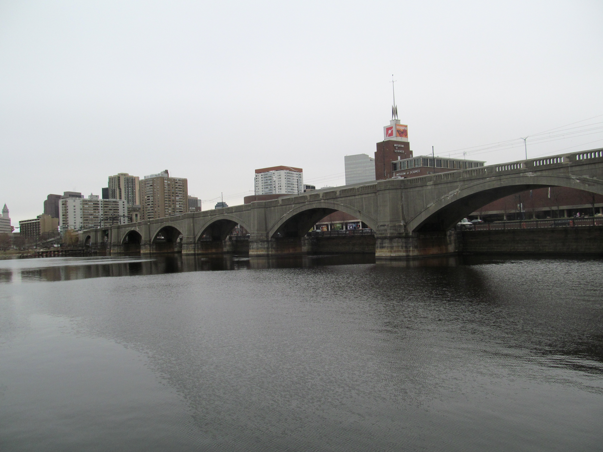</div>`)[0];
            popup_48a872d9ecfe4524bd0682f9e99dcffa.setContent(html_5ff7dd8b1ba542bb9d3c058c816f22f4);
        

        marker_63bb2dc0e6594e7c98e659d00dba2462.bindPopup(popup_48a872d9ecfe4524bd0682f9e99dcffa)
        ;

        
    
    
            var marker_409b60c20efb47b99c6354845f0e503c = L.marker(
                [42.3671278, -71.0691306],
                {}
            ).addTo(map_d3509080ee224f469ba298cdd85bfc87);
        
    
            var icon_105865948fba4dc1aa3f57652e25d409 = L.AwesomeMarkers.icon(
                {"extraClasses": "fa-rotate-0", "icon": "info-sign", "iconColor": "white", "markerColor": "red", "prefix": "glyphicon"}
            );
            marker_409b60c20efb47b99c6354845f0e503c.setIcon(icon_105865948fba4dc1aa3f57652e25d409);
        
    
        var popup_616e8cda329a497580e84b094b061821 = L.popup({"maxWidth": "100%"});

        
            var html_72c2f554c2594f21862cd28f5cbb7fb6 = $(`<div id="html_72c2f554c2594f21862cd28f5cbb7fb6" style="width: 100.0%; height: 100.0%;"><strong style="color:#967bb6;width=500%;height=500%">(Old) Charles River Dam Bridge</strong><br></div>`)[0];
            popup_616e8cda329a497580e84b094b061821.setContent(html_72c2f554c2594f21862cd28f5cbb7fb6);
        

        marker_409b60c20efb47b99c6354845f0e503c.bindPopup(popup_616e8cda329a497580e84b094b061821)
        ;

        
    
    
            var marker_2d42ae092fe24f2ca8e44d06f438b698 = L.marker(
                [42.36139, -71.07556],
                {}
            ).addTo(map_d3509080ee224f469ba298cdd85bfc87);
        
    
            var icon_bfd50031c2ea415eb5ab193af11774f2 = L.AwesomeMarkers.icon(
                {"extraClasses": "fa-rotate-0", "icon": "info-sign", "iconColor": "white", "markerColor": "green", "prefix": "glyphicon"}
            );
            marker_2d42ae092fe24f2ca8e44d06f438b698.setIcon(icon_bfd50031c2ea415eb5ab193af11774f2);
        
    
        var popup_3a99b7f407b147fd9554e9413bd28560 = L.popup({"maxWidth": "100%"});

        
            var html_f354840483bc470dbe9fb5b5a5da8efd = $(`<div id="html_f354840483bc470dbe9fb5b5a5da8efd" style="width: 100.0%; height: 100.0%;"><strong style="color:#967bb6;width=500%;height=500%">Longfellow Bridge</strong><br>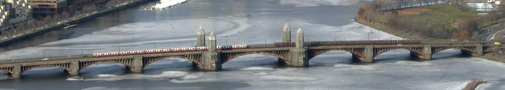</div>`)[0];
            popup_3a99b7f407b147fd9554e9413bd28560.setContent(html_f354840483bc470dbe9fb5b5a5da8efd);
        

        marker_2d42ae092fe24f2ca8e44d06f438b698.bindPopup(popup_3a99b7f407b147fd9554e9413bd28560)
        ;

        
    
    
            var marker_c30a6e41a0eb4f9f9062e67df923a958 = L.marker(
                [42.35417, -71.09111],
                {}
            ).addTo(map_d3509080ee224f469ba298cdd85bfc87);
        
    
            var icon_a12e50dd9e5241ea87dc18498745f184 = L.AwesomeMarkers.icon(
                {"extraClasses": "fa-rotate-0", "icon": "info-sign", "iconColor": "white", "markerColor": "green", "prefix": "glyphicon"}
            );
            marker_c30a6e41a0eb4f9f9062e67df923a958.setIcon(icon_a12e50dd9e5241ea87dc18498745f184);
        
    
        var popup_452a07cc86b242d8ab4a8897374ec490 = L.popup({"maxWidth": "100%"});

        
            var html_3bcf8930fb644728bc9ded1015875c39 = $(`<div id="html_3bcf8930fb644728bc9ded1015875c39" style="width: 100.0%; height: 100.0%;"><strong style="color:#967bb6;width=500%;height=500%">Harvard Bridge</strong><br></div>`)[0];
            popup_452a07cc86b242d8ab4a8897374ec490.setContent(html_3bcf8930fb644728bc9ded1015875c39);
        

        marker_c30a6e41a0eb4f9f9062e67df923a958.bindPopup(popup_452a07cc86b242d8ab4a8897374ec490)
        ;

        
    
    
            var marker_60d7d0b944db44d488c124f086dc5eee = L.marker(
                [42.3525333, -71.1106278],
                {}
            ).addTo(map_d3509080ee224f469ba298cdd85bfc87);
        
    
            var icon_1f6c8a4fe353417b9e997ee3e2d4230a = L.AwesomeMarkers.icon(
                {"extraClasses": "fa-rotate-0", "icon": "info-sign", "iconColor": "white", "markerColor": "green", "prefix": "glyphicon"}
            );
            marker_60d7d0b944db44d488c124f086dc5eee.setIcon(icon_1f6c8a4fe353417b9e997ee3e2d4230a);
        
    
        var popup_4af6c5959a9544fb87aa46f74127b268 = L.popup({"maxWidth": "100%"});

        
            var html_e762a719c53d44dc90fd689cb6bbec63 = $(`<div id="html_e762a719c53d44dc90fd689cb6bbec63" style="width: 100.0%; height: 100.0%;"><strong style="color:#967bb6;width=500%;height=500%">Boston University Bridge</strong><br>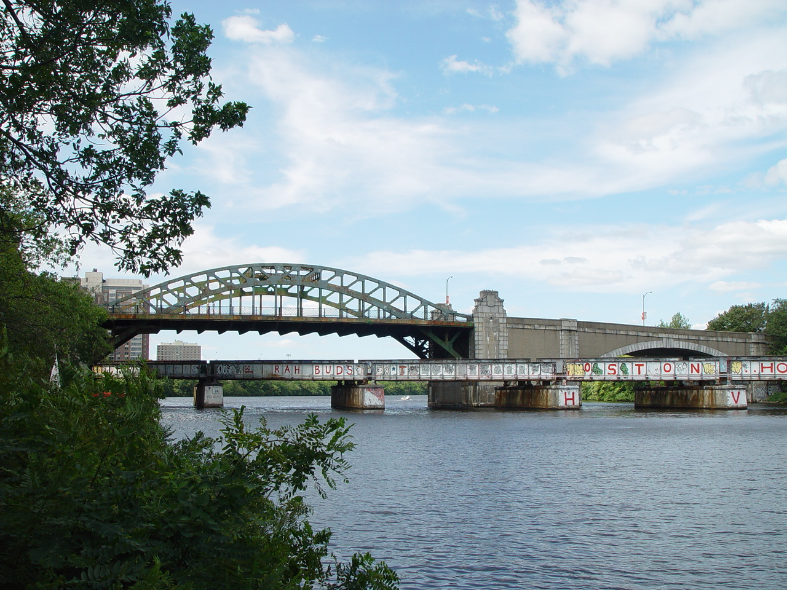</div>`)[0];
            popup_4af6c5959a9544fb87aa46f74127b268.setContent(html_e762a719c53d44dc90fd689cb6bbec63);
        

        marker_60d7d0b944db44d488c124f086dc5eee.bindPopup(popup_4af6c5959a9544fb87aa46f74127b268)
        ;

        
    
    
            var marker_29949dd2ecfc4db5b247e0eafce5d39d = L.marker(
                [42.3526917, -71.1102],
                {}
            ).addTo(map_d3509080ee224f469ba298cdd85bfc87);
        
    
            var icon_71f6f937d0714be49a05c5528cf1f536 = L.AwesomeMarkers.icon(
                {"extraClasses": "fa-rotate-0", "icon": "info-sign", "iconColor": "white", "markerColor": "red", "prefix": "glyphicon"}
            );
            marker_29949dd2ecfc4db5b247e0eafce5d39d.setIcon(icon_71f6f937d0714be49a05c5528cf1f536);
        
    
        var popup_9fa32dbdcbfe45db9f9490113f4da303 = L.popup({"maxWidth": "100%"});

        
            var html_8dd4ce6af8d3413e969f7b6182e71cf7 = $(`<div id="html_8dd4ce6af8d3413e969f7b6182e71cf7" style="width: 100.0%; height: 100.0%;"><strong style="color:#967bb6;width=500%;height=500%">Grand Junction Railroad Bridge</strong><br></div>`)[0];
            popup_9fa32dbdcbfe45db9f9490113f4da303.setContent(html_8dd4ce6af8d3413e969f7b6182e71cf7);
        

        marker_29949dd2ecfc4db5b247e0eafce5d39d.bindPopup(popup_9fa32dbdcbfe45db9f9490113f4da303)
        ;

        
    
    
            var marker_75312a80164c4623b650fa6a6450a2f1 = L.marker(
                [42.36139, -71.11667],
                {}
            ).addTo(map_d3509080ee224f469ba298cdd85bfc87);
        
    
            var icon_222f3c34ca3d4597906fb29063eaec2b = L.AwesomeMarkers.icon(
                {"extraClasses": "fa-rotate-0", "icon": "info-sign", "iconColor": "white", "markerColor": "green", "prefix": "glyphicon"}
            );
            marker_75312a80164c4623b650fa6a6450a2f1.setIcon(icon_222f3c34ca3d4597906fb29063eaec2b);
        
    
        var popup_ea4c9f9a8f6a486aaf5ae8cc4a3bb4c8 = L.popup({"maxWidth": "100%"});

        
            var html_b22880055ac6403b9856f8a3723a7c19 = $(`<div id="html_b22880055ac6403b9856f8a3723a7c19" style="width: 100.0%; height: 100.0%;"><strong style="color:#967bb6;width=500%;height=500%">River Street Bridge</strong><br></div>`)[0];
            popup_ea4c9f9a8f6a486aaf5ae8cc4a3bb4c8.setContent(html_b22880055ac6403b9856f8a3723a7c19);
        

        marker_75312a80164c4623b650fa6a6450a2f1.bindPopup(popup_ea4c9f9a8f6a486aaf5ae8cc4a3bb4c8)
        ;

        
    
    
            var marker_47c09461aa10491b8bc39317d4ee8962 = L.marker(
                [42.3642361, -71.1169806],
                {}
            ).addTo(map_d3509080ee224f469ba298cdd85bfc87);
        
    
            var icon_4d38a81aa317471db31a35a76218b0a1 = L.AwesomeMarkers.icon(
                {"extraClasses": "fa-rotate-0", "icon": "info-sign", "iconColor": "white", "markerColor": "green", "prefix": "glyphicon"}
            );
            marker_47c09461aa10491b8bc39317d4ee8962.setIcon(icon_4d38a81aa317471db31a35a76218b0a1);
        
    
        var popup_70d9ef2bfe62457d9c70dd065049578a = L.popup({"maxWidth": "100%"});

        
            var html_9c986ec247344c23880c80cc0bc206e6 = $(`<div id="html_9c986ec247344c23880c80cc0bc206e6" style="width: 100.0%; height: 100.0%;"><strong style="color:#967bb6;width=500%;height=500%">Western Avenue Bridge</strong><br></div>`)[0];
            popup_70d9ef2bfe62457d9c70dd065049578a.setContent(html_9c986ec247344c23880c80cc0bc206e6);
        

        marker_47c09461aa10491b8bc39317d4ee8962.bindPopup(popup_70d9ef2bfe62457d9c70dd065049578a)
        ;

        
    
    
            var marker_8e22ad632fc7437199cc7e6643135890 = L.marker(
                [42.3685083, -71.1181278],
                {}
            ).addTo(map_d3509080ee224f469ba298cdd85bfc87);
        
    
            var icon_f92537dc98624377bc104c87886c93d2 = L.AwesomeMarkers.icon(
                {"extraClasses": "fa-rotate-0", "icon": "info-sign", "iconColor": "white", "markerColor": "green", "prefix": "glyphicon"}
            );
            marker_8e22ad632fc7437199cc7e6643135890.setIcon(icon_f92537dc98624377bc104c87886c93d2);
        
    
        var popup_e3250492c6a9482a990b049880e2a931 = L.popup({"maxWidth": "100%"});

        
            var html_edaa6ad4fb8a4d55aaecb4ddfd9fc5d5 = $(`<div id="html_edaa6ad4fb8a4d55aaecb4ddfd9fc5d5" style="width: 100.0%; height: 100.0%;"><strong style="color:#967bb6;width=500%;height=500%">John W. Weeks Bridge</strong><br>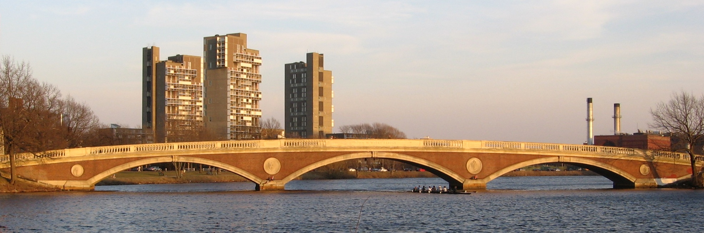</div>`)[0];
            popup_e3250492c6a9482a990b049880e2a931.setContent(html_edaa6ad4fb8a4d55aaecb4ddfd9fc5d5);
        

        marker_8e22ad632fc7437199cc7e6643135890.bindPopup(popup_e3250492c6a9482a990b049880e2a931)
        ;

        
    
    
            var marker_42fdc046ed5a453dbfdd5252b2952a99 = L.marker(
                [42.36889, -71.12306],
                {}
            ).addTo(map_d3509080ee224f469ba298cdd85bfc87);
        
    
            var icon_200ce3e79e354638885c828e41961bf4 = L.AwesomeMarkers.icon(
                {"extraClasses": "fa-rotate-0", "icon": "info-sign", "iconColor": "white", "markerColor": "green", "prefix": "glyphicon"}
            );
            marker_42fdc046ed5a453dbfdd5252b2952a99.setIcon(icon_200ce3e79e354638885c828e41961bf4);
        
    
        var popup_bacb168a1318450fb27d1aeadd7153b8 = L.popup({"maxWidth": "100%"});

        
            var html_e7bfb124fd45453e9eab599afae8770f = $(`<div id="html_e7bfb124fd45453e9eab599afae8770f" style="width: 100.0%; height: 100.0%;"><strong style="color:#967bb6;width=500%;height=500%">Anderson Memorial Bridge</strong><br>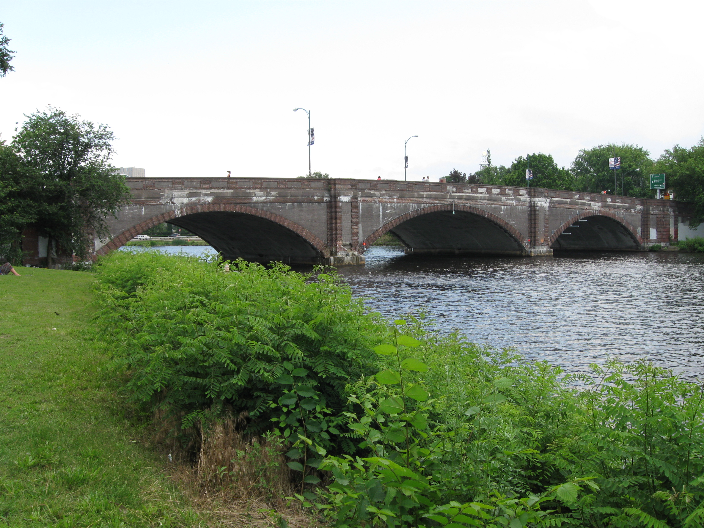</div>`)[0];
            popup_bacb168a1318450fb27d1aeadd7153b8.setContent(html_e7bfb124fd45453e9eab599afae8770f);
        

        marker_42fdc046ed5a453dbfdd5252b2952a99.bindPopup(popup_bacb168a1318450fb27d1aeadd7153b8)
        ;

        
    
    
            var marker_a32819b0e74149a082367f143553b9eb = L.marker(
                [42.37167, -71.13306],
                {}
            ).addTo(map_d3509080ee224f469ba298cdd85bfc87);
        
    
            var icon_f20f40a06ee343d4a6b126d46ece9902 = L.AwesomeMarkers.icon(
                {"extraClasses": "fa-rotate-0", "icon": "info-sign", "iconColor": "white", "markerColor": "green", "prefix": "glyphicon"}
            );
            marker_a32819b0e74149a082367f143553b9eb.setIcon(icon_f20f40a06ee343d4a6b126d46ece9902);
        
    
        var popup_d1cb66891b1a489dac73ed6b5785071e = L.popup({"maxWidth": "100%"});

        
            var html_e184da2a00b54c80b0ba6afb43f17a38 = $(`<div id="html_e184da2a00b54c80b0ba6afb43f17a38" style="width: 100.0%; height: 100.0%;"><strong style="color:#967bb6;width=500%;height=500%">Eliot Bridge</strong><br>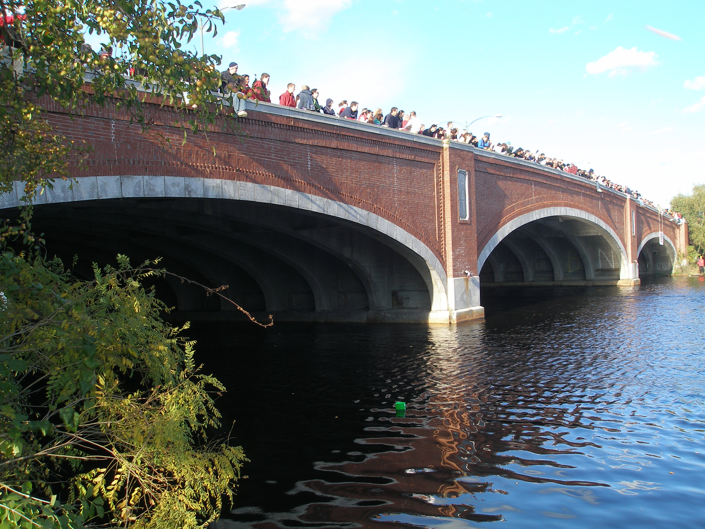</div>`)[0];
            popup_d1cb66891b1a489dac73ed6b5785071e.setContent(html_e184da2a00b54c80b0ba6afb43f17a38);
        

        marker_a32819b0e74149a082367f143553b9eb.bindPopup(popup_d1cb66891b1a489dac73ed6b5785071e)
        ;

        
    
    
            var marker_809187dd436140eda69404db207897c6 = L.marker(
                [42.36167, -71.14722],
                {}
            ).addTo(map_d3509080ee224f469ba298cdd85bfc87);
        
    
            var icon_f41c5a0b12ae444dad6421e84720dfc7 = L.AwesomeMarkers.icon(
                {"extraClasses": "fa-rotate-0", "icon": "info-sign", "iconColor": "white", "markerColor": "green", "prefix": "glyphicon"}
            );
            marker_809187dd436140eda69404db207897c6.setIcon(icon_f41c5a0b12ae444dad6421e84720dfc7);
        
    
        var popup_854c8210cc544d6a9b8064a3e2b7314c = L.popup({"maxWidth": "100%"});

        
            var html_bf3c9e37329447ebb134c1da11487ebc = $(`<div id="html_bf3c9e37329447ebb134c1da11487ebc" style="width: 100.0%; height: 100.0%;"><strong style="color:#967bb6;width=500%;height=500%">Arsenal Street Bridge</strong><br></div>`)[0];
            popup_854c8210cc544d6a9b8064a3e2b7314c.setContent(html_bf3c9e37329447ebb134c1da11487ebc);
        

        marker_809187dd436140eda69404db207897c6.bindPopup(popup_854c8210cc544d6a9b8064a3e2b7314c)
        ;

        
    
    
            var marker_aacbf4f2882c4bfa8a39126bca464045 = L.marker(
                [42.35889, -71.16167],
                {}
            ).addTo(map_d3509080ee224f469ba298cdd85bfc87);
        
    
            var icon_f6b02db9186744ba9552cbf0ffe2efe9 = L.AwesomeMarkers.icon(
                {"extraClasses": "fa-rotate-0", "icon": "info-sign", "iconColor": "white", "markerColor": "green", "prefix": "glyphicon"}
            );
            marker_aacbf4f2882c4bfa8a39126bca464045.setIcon(icon_f6b02db9186744ba9552cbf0ffe2efe9);
        
    
        var popup_a5e15efe9f94432aaa196b380c6f5e18 = L.popup({"maxWidth": "100%"});

        
            var html_551a38687b9f41bb9e8864091fd62040 = $(`<div id="html_551a38687b9f41bb9e8864091fd62040" style="width: 100.0%; height: 100.0%;"><strong style="color:#967bb6;width=500%;height=500%">North Beacon Street Bridge</strong><br>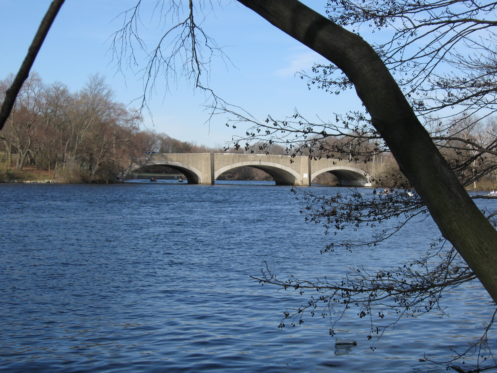</div>`)[0];
            popup_a5e15efe9f94432aaa196b380c6f5e18.setContent(html_551a38687b9f41bb9e8864091fd62040);
        

        marker_aacbf4f2882c4bfa8a39126bca464045.bindPopup(popup_a5e15efe9f94432aaa196b380c6f5e18)
        ;

        
    
    
            var marker_556f0bf1e9bc41eaa985a7a1d60a1e3e = L.marker(
                [42.36472, -71.18556],
                {}
            ).addTo(map_d3509080ee224f469ba298cdd85bfc87);
        
    
            var icon_81be7b5f1a55476a917468fc1bf174b2 = L.AwesomeMarkers.icon(
                {"extraClasses": "fa-rotate-0", "icon": "info-sign", "iconColor": "white", "markerColor": "green", "prefix": "glyphicon"}
            );
            marker_556f0bf1e9bc41eaa985a7a1d60a1e3e.setIcon(icon_81be7b5f1a55476a917468fc1bf174b2);
        
    
        var popup_e6ca088b81fb429c8e0f9886bc7c05aa = L.popup({"maxWidth": "100%"});

        
            var html_a7765b26fc074971abb62496e4ffae85 = $(`<div id="html_a7765b26fc074971abb62496e4ffae85" style="width: 100.0%; height: 100.0%;"><strong style="color:#967bb6;width=500%;height=500%">Watertown Bridge</strong><br>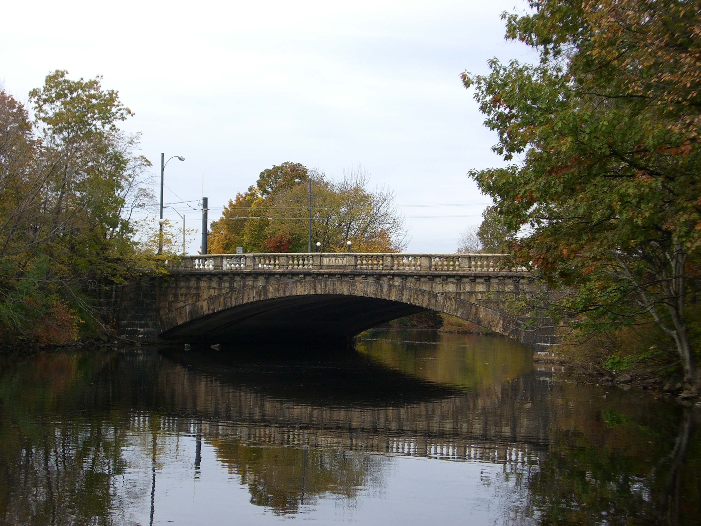</div>`)[0];
            popup_e6ca088b81fb429c8e0f9886bc7c05aa.setContent(html_a7765b26fc074971abb62496e4ffae85);
        

        marker_556f0bf1e9bc41eaa985a7a1d60a1e3e.bindPopup(popup_e6ca088b81fb429c8e0f9886bc7c05aa)
        ;

        
    
    
            var marker_1502ca80cc3f48eaa31bb7ce3064a44b = L.marker(
                [42.3653528, -71.1892611],
                {}
            ).addTo(map_d3509080ee224f469ba298cdd85bfc87);
        
    
            var icon_5b79de21cb24466db9e1e99a7bf1babf = L.AwesomeMarkers.icon(
                {"extraClasses": "fa-rotate-0", "icon": "info-sign", "iconColor": "white", "markerColor": "red", "prefix": "glyphicon"}
            );
            marker_1502ca80cc3f48eaa31bb7ce3064a44b.setIcon(icon_5b79de21cb24466db9e1e99a7bf1babf);
        
    
        var popup_fa746e10eff84e178424936cb863d84a = L.popup({"maxWidth": "100%"});

        
            var html_f1f84b6d599a41138ef65641b10dfe8d = $(`<div id="html_f1f84b6d599a41138ef65641b10dfe8d" style="width: 100.0%; height: 100.0%;"><strong style="color:#967bb6;width=500%;height=500%">Watertown Dam</strong><br></div>`)[0];
            popup_fa746e10eff84e178424936cb863d84a.setContent(html_f1f84b6d599a41138ef65641b10dfe8d);
        

        marker_1502ca80cc3f48eaa31bb7ce3064a44b.bindPopup(popup_fa746e10eff84e178424936cb863d84a)
        ;

        
    
    
            var marker_9dad155186c64446a69cc38957a91743 = L.marker(
                [42.3651083, -71.1902694],
                {}
            ).addTo(map_d3509080ee224f469ba298cdd85bfc87);
        
    
            var icon_aa78b53a7b674978b3e90973a08a6bb4 = L.AwesomeMarkers.icon(
                {"extraClasses": "fa-rotate-0", "icon": "info-sign", "iconColor": "white", "markerColor": "red", "prefix": "glyphicon"}
            );
            marker_9dad155186c64446a69cc38957a91743.setIcon(icon_aa78b53a7b674978b3e90973a08a6bb4);
        
    
        var popup_cf5d5c8420c6424a8027730bb0cd8c1c = L.popup({"maxWidth": "100%"});

        
            var html_d20d2e2b135c40abbfb6931b5f1f3015 = $(`<div id="html_d20d2e2b135c40abbfb6931b5f1f3015" style="width: 100.0%; height: 100.0%;"><strong style="color:#967bb6;width=500%;height=500%">Cpl. Joseph U. Thompson Footbridge</strong><br></div>`)[0];
            popup_cf5d5c8420c6424a8027730bb0cd8c1c.setContent(html_d20d2e2b135c40abbfb6931b5f1f3015);
        

        marker_9dad155186c64446a69cc38957a91743.bindPopup(popup_cf5d5c8420c6424a8027730bb0cd8c1c)
        ;

        
    
    
            var marker_48f123cfda8e43a093baff2578a06fff = L.marker(
                [42.3651083, -71.1902694],
                {}
            ).addTo(map_d3509080ee224f469ba298cdd85bfc87);
        
    
            var icon_afe0c8a801124478b5eef088e861a376 = L.AwesomeMarkers.icon(
                {"extraClasses": "fa-rotate-0", "icon": "info-sign", "iconColor": "white", "markerColor": "green", "prefix": "glyphicon"}
            );
            marker_48f123cfda8e43a093baff2578a06fff.setIcon(icon_afe0c8a801124478b5eef088e861a376);
        
    
        var popup_51ef2a841a044774b0827ec4c6d7eff1 = L.popup({"maxWidth": "100%"});

        
            var html_d5d6cdfdd379496f86f0de69d1ced2fa = $(`<div id="html_d5d6cdfdd379496f86f0de69d1ced2fa" style="width: 100.0%; height: 100.0%;"><strong style="color:#967bb6;width=500%;height=500%">Cpl. Joseph U. Thompson Footbridge (new)</strong><br></div>`)[0];
            popup_51ef2a841a044774b0827ec4c6d7eff1.setContent(html_d5d6cdfdd379496f86f0de69d1ced2fa);
        

        marker_48f123cfda8e43a093baff2578a06fff.bindPopup(popup_51ef2a841a044774b0827ec4c6d7eff1)
        ;

        
    
    
            var marker_cabab4b5c44346e18b93ddc25765e8e2 = L.marker(
                [42.3657972, -71.2044333],
                {}
            ).addTo(map_d3509080ee224f469ba298cdd85bfc87);
        
    
            var icon_460463b543df484da0086ae21bec8fd1 = L.AwesomeMarkers.icon(
                {"extraClasses": "fa-rotate-0", "icon": "info-sign", "iconColor": "white", "markerColor": "green", "prefix": "glyphicon"}
            );
            marker_cabab4b5c44346e18b93ddc25765e8e2.setIcon(icon_460463b543df484da0086ae21bec8fd1);
        
    
        var popup_863defef51ec4da9a757a3f2e26332b6 = L.popup({"maxWidth": "100%"});

        
            var html_0343e5e681c445f0980e69b9e62ac344 = $(`<div id="html_0343e5e681c445f0980e69b9e62ac344" style="width: 100.0%; height: 100.0%;"><strong style="color:#967bb6;width=500%;height=500%">Bridge Street Bridge1</strong><br></div>`)[0];
            popup_863defef51ec4da9a757a3f2e26332b6.setContent(html_0343e5e681c445f0980e69b9e62ac344);
        

        marker_cabab4b5c44346e18b93ddc25765e8e2.bindPopup(popup_863defef51ec4da9a757a3f2e26332b6)
        ;

        
    
    
            var marker_e9c247f7d66f4806a6dc579aaec4008f = L.marker(
                [42.3657167, -71.2049778],
                {}
            ).addTo(map_d3509080ee224f469ba298cdd85bfc87);
        
    
            var icon_414cfde6e4dd4be5a1f4940c9beedbb4 = L.AwesomeMarkers.icon(
                {"extraClasses": "fa-rotate-0", "icon": "info-sign", "iconColor": "white", "markerColor": "red", "prefix": "glyphicon"}
            );
            marker_e9c247f7d66f4806a6dc579aaec4008f.setIcon(icon_414cfde6e4dd4be5a1f4940c9beedbb4);
        
    
        var popup_e8769acfe9d04337a664f3c4b8074ab7 = L.popup({"maxWidth": "100%"});

        
            var html_4b18f08a4e7445c197b0c7e58da034c4 = $(`<div id="html_4b18f08a4e7445c197b0c7e58da034c4" style="width: 100.0%; height: 100.0%;"><strong style="color:#967bb6;width=500%;height=500%">Bemis Dam (breached)</strong><br></div>`)[0];
            popup_e8769acfe9d04337a664f3c4b8074ab7.setContent(html_4b18f08a4e7445c197b0c7e58da034c4);
        

        marker_e9c247f7d66f4806a6dc579aaec4008f.bindPopup(popup_e8769acfe9d04337a664f3c4b8074ab7)
        ;

        
    
    
            var marker_d5e7d8871e5a495b998dbb6f4ee8d7e5 = L.marker(
                [42.3648139, -71.2127361],
                {}
            ).addTo(map_d3509080ee224f469ba298cdd85bfc87);
        
    
            var icon_8d157a253eae4d4a8137005bfbc391e8 = L.AwesomeMarkers.icon(
                {"extraClasses": "fa-rotate-0", "icon": "info-sign", "iconColor": "white", "markerColor": "green", "prefix": "glyphicon"}
            );
            marker_d5e7d8871e5a495b998dbb6f4ee8d7e5.setIcon(icon_8d157a253eae4d4a8137005bfbc391e8);
        
    
        var popup_6c6319422867490f961b4155f013e68e = L.popup({"maxWidth": "100%"});

        
            var html_6e0ec82ff74a48deac82cb810f48d9d1 = $(`<div id="html_6e0ec82ff74a48deac82cb810f48d9d1" style="width: 100.0%; height: 100.0%;"><strong style="color:#967bb6;width=500%;height=500%">Blue Heron Footbridge</strong><br></div>`)[0];
            popup_6c6319422867490f961b4155f013e68e.setContent(html_6e0ec82ff74a48deac82cb810f48d9d1);
        

        marker_d5e7d8871e5a495b998dbb6f4ee8d7e5.bindPopup(popup_6c6319422867490f961b4155f013e68e)
        ;

        
    
    
            var marker_1d6e56840fca4ac786cabc2371b5aaf6 = L.marker(
                [42.367028, -71.218083],
                {}
            ).addTo(map_d3509080ee224f469ba298cdd85bfc87);
        
    
            var icon_6aa7f70046d246da9c08f41ff5065e1f = L.AwesomeMarkers.icon(
                {"extraClasses": "fa-rotate-0", "icon": "info-sign", "iconColor": "white", "markerColor": "green", "prefix": "glyphicon"}
            );
            marker_1d6e56840fca4ac786cabc2371b5aaf6.setIcon(icon_6aa7f70046d246da9c08f41ff5065e1f);
        
    
        var popup_bd65f2c69ac64def8740f83ba6204006 = L.popup({"maxWidth": "100%"});

        
            var html_693990bb3ad145aeb61cfeb1d78ec988 = $(`<div id="html_693990bb3ad145aeb61cfeb1d78ec988" style="width: 100.0%; height: 100.0%;"><strong style="color:#967bb6;width=500%;height=500%">Farwell Street Bridge</strong><br></div>`)[0];
            popup_bd65f2c69ac64def8740f83ba6204006.setContent(html_693990bb3ad145aeb61cfeb1d78ec988);
        

        marker_1d6e56840fca4ac786cabc2371b5aaf6.bindPopup(popup_bd65f2c69ac64def8740f83ba6204006)
        ;

        
    
    
            var marker_1b3e7ed427034cb896ae876fe416ebdc = L.marker(
                [42.368944, -71.222333],
                {}
            ).addTo(map_d3509080ee224f469ba298cdd85bfc87);
        
    
            var icon_8564976a2eaa4c08a36752ce378d7680 = L.AwesomeMarkers.icon(
                {"extraClasses": "fa-rotate-0", "icon": "info-sign", "iconColor": "white", "markerColor": "red", "prefix": "glyphicon"}
            );
            marker_1b3e7ed427034cb896ae876fe416ebdc.setIcon(icon_8564976a2eaa4c08a36752ce378d7680);
        
    
        var popup_64af5423f48a4ab392a001dcf9021d57 = L.popup({"maxWidth": "100%"});

        
            var html_3e38453ee8064e8fb4e6f0e845440b46 = $(`<div id="html_3e38453ee8064e8fb4e6f0e845440b46" style="width: 100.0%; height: 100.0%;"><strong style="color:#967bb6;width=500%;height=500%">Bleachery Footbridge</strong><br></div>`)[0];
            popup_64af5423f48a4ab392a001dcf9021d57.setContent(html_3e38453ee8064e8fb4e6f0e845440b46);
        

        marker_1b3e7ed427034cb896ae876fe416ebdc.bindPopup(popup_64af5423f48a4ab392a001dcf9021d57)
        ;

        
    
    
            var marker_18c7a2262835477080d82ee5be7e2f6f = L.marker(
                [42.3691194, -71.2229833],
                {}
            ).addTo(map_d3509080ee224f469ba298cdd85bfc87);
        
    
            var icon_78730a9e7b4f4f0aa593f0b3dbfbfa6d = L.AwesomeMarkers.icon(
                {"extraClasses": "fa-rotate-0", "icon": "info-sign", "iconColor": "white", "markerColor": "red", "prefix": "glyphicon"}
            );
            marker_18c7a2262835477080d82ee5be7e2f6f.setIcon(icon_78730a9e7b4f4f0aa593f0b3dbfbfa6d);
        
    
        var popup_fb9fb04cc2134a1683fac599b0154309 = L.popup({"maxWidth": "100%"});

        
            var html_69e07511e1bb475a827e5061b57b82b0 = $(`<div id="html_69e07511e1bb475a827e5061b57b82b0" style="width: 100.0%; height: 100.0%;"><strong style="color:#967bb6;width=500%;height=500%">Bleachery Dam</strong><br></div>`)[0];
            popup_fb9fb04cc2134a1683fac599b0154309.setContent(html_69e07511e1bb475a827e5061b57b82b0);
        

        marker_18c7a2262835477080d82ee5be7e2f6f.bindPopup(popup_fb9fb04cc2134a1683fac599b0154309)
        ;

        
    
    
            var marker_2700a9db0e4a471192a970cf8f8736a6 = L.marker(
                [42.36965, -71.2238722],
                {}
            ).addTo(map_d3509080ee224f469ba298cdd85bfc87);
        
    
            var icon_3f035fdea4e84d8588c56211be57fc73 = L.AwesomeMarkers.icon(
                {"extraClasses": "fa-rotate-0", "icon": "info-sign", "iconColor": "white", "markerColor": "green", "prefix": "glyphicon"}
            );
            marker_2700a9db0e4a471192a970cf8f8736a6.setIcon(icon_3f035fdea4e84d8588c56211be57fc73);
        
    
        var popup_ed6c5449d144495bae5f8627010cb357 = L.popup({"maxWidth": "100%"});

        
            var html_c8ff4b1c285e4b8496af7f0285cdbca4 = $(`<div id="html_c8ff4b1c285e4b8496af7f0285cdbca4" style="width: 100.0%; height: 100.0%;"><strong style="color:#967bb6;width=500%;height=500%">Mary T. Early Footbridge</strong><br></div>`)[0];
            popup_ed6c5449d144495bae5f8627010cb357.setContent(html_c8ff4b1c285e4b8496af7f0285cdbca4);
        

        marker_2700a9db0e4a471192a970cf8f8736a6.bindPopup(popup_ed6c5449d144495bae5f8627010cb357)
        ;

        
    
    
            var marker_7a5307034e3541bbb32d40fc4e2c44be = L.marker(
                [42.3697528, -71.2239694],
                {}
            ).addTo(map_d3509080ee224f469ba298cdd85bfc87);
        
    
            var icon_96171c28a4db41249509a5c900608a7c = L.AwesomeMarkers.icon(
                {"extraClasses": "fa-rotate-0", "icon": "info-sign", "iconColor": "white", "markerColor": "red", "prefix": "glyphicon"}
            );
            marker_7a5307034e3541bbb32d40fc4e2c44be.setIcon(icon_96171c28a4db41249509a5c900608a7c);
        
    
        var popup_d0b51772ea0e439ca546cfdd7e38b8a9 = L.popup({"maxWidth": "100%"});

        
            var html_4e635f58bcfd424fb7b3292edf51f5d8 = $(`<div id="html_4e635f58bcfd424fb7b3292edf51f5d8" style="width: 100.0%; height: 100.0%;"><strong style="color:#967bb6;width=500%;height=500%">Boston & Maine Railroad trestle (abandoned)</strong><br></div>`)[0];
            popup_d0b51772ea0e439ca546cfdd7e38b8a9.setContent(html_4e635f58bcfd424fb7b3292edf51f5d8);
        

        marker_7a5307034e3541bbb32d40fc4e2c44be.bindPopup(popup_d0b51772ea0e439ca546cfdd7e38b8a9)
        ;

        
    
    
            var marker_98dc121b56574bf88c7d710250e198ff = L.marker(
                [42.3725278, -71.2287528],
                {}
            ).addTo(map_d3509080ee224f469ba298cdd85bfc87);
        
    
            var icon_9c5416cc65bb479e93cbc08f7a60a473 = L.AwesomeMarkers.icon(
                {"extraClasses": "fa-rotate-0", "icon": "info-sign", "iconColor": "white", "markerColor": "green", "prefix": "glyphicon"}
            );
            marker_98dc121b56574bf88c7d710250e198ff.setIcon(icon_9c5416cc65bb479e93cbc08f7a60a473);
        
    
        var popup_71dbc493f8ee48fda9ab63ee9969f338 = L.popup({"maxWidth": "100%"});

        
            var html_788c2e8548e3414992454244fdc74b8c = $(`<div id="html_788c2e8548e3414992454244fdc74b8c" style="width: 100.0%; height: 100.0%;"><strong style="color:#967bb6;width=500%;height=500%">Charles F. Graceffa Bridge</strong><br>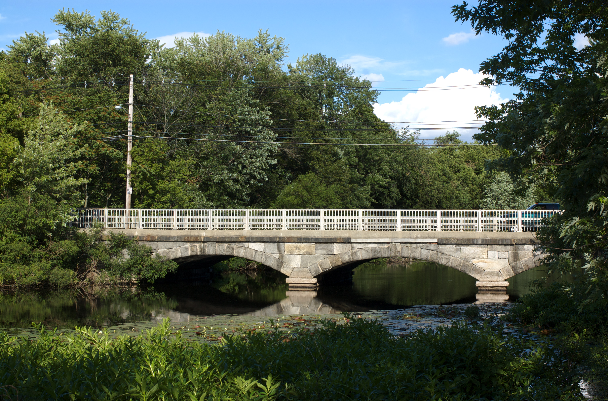</div>`)[0];
            popup_71dbc493f8ee48fda9ab63ee9969f338.setContent(html_788c2e8548e3414992454244fdc74b8c);
        

        marker_98dc121b56574bf88c7d710250e198ff.bindPopup(popup_71dbc493f8ee48fda9ab63ee9969f338)
        ;

        
    
    
            var marker_8f4ff5a9a28b4d1399091f652bfe985e = L.marker(
                [42.3730194, -71.2325528],
                {}
            ).addTo(map_d3509080ee224f469ba298cdd85bfc87);
        
    
            var icon_35dafb8502e547348a41a7c5c527add2 = L.AwesomeMarkers.icon(
                {"extraClasses": "fa-rotate-0", "icon": "info-sign", "iconColor": "white", "markerColor": "green", "prefix": "glyphicon"}
            );
            marker_8f4ff5a9a28b4d1399091f652bfe985e.setIcon(icon_35dafb8502e547348a41a7c5c527add2);
        
    
        var popup_9bb1e1ce6a8a43f2979578c6b5e448ce = L.popup({"maxWidth": "100%"});

        
            var html_24879a6224fa47fe8ba664e62c958606 = $(`<div id="html_24879a6224fa47fe8ba664e62c958606" style="width: 100.0%; height: 100.0%;"><strong style="color:#967bb6;width=500%;height=500%">Elm Street Bridge</strong><br>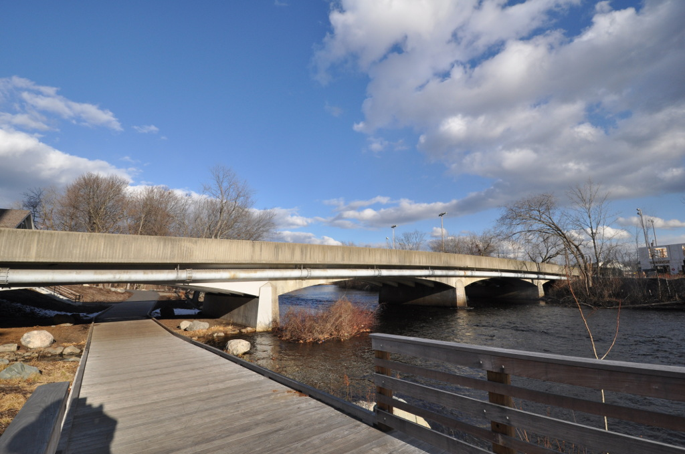</div>`)[0];
            popup_9bb1e1ce6a8a43f2979578c6b5e448ce.setContent(html_24879a6224fa47fe8ba664e62c958606);
        

        marker_8f4ff5a9a28b4d1399091f652bfe985e.bindPopup(popup_9bb1e1ce6a8a43f2979578c6b5e448ce)
        ;

        
    
    
            var marker_3fb85476ca1e4e6085e4e4b609c3f64b = L.marker(
                [42.3728361, -71.2330889],
                {}
            ).addTo(map_d3509080ee224f469ba298cdd85bfc87);
        
    
            var icon_7d7a62b888dd4d728d8ad5497da560c9 = L.AwesomeMarkers.icon(
                {"extraClasses": "fa-rotate-0", "icon": "info-sign", "iconColor": "white", "markerColor": "red", "prefix": "glyphicon"}
            );
            marker_3fb85476ca1e4e6085e4e4b609c3f64b.setIcon(icon_7d7a62b888dd4d728d8ad5497da560c9);
        
    
        var popup_f1151930193e47729300cbf60da76637 = L.popup({"maxWidth": "100%"});

        
            var html_bd6cce1684414d7691acc6d106d4548c = $(`<div id="html_bd6cce1684414d7691acc6d106d4548c" style="width: 100.0%; height: 100.0%;"><strong style="color:#967bb6;width=500%;height=500%">Boston & Maine Railroad trestle (abandoned)</strong><br></div>`)[0];
            popup_f1151930193e47729300cbf60da76637.setContent(html_bd6cce1684414d7691acc6d106d4548c);
        

        marker_3fb85476ca1e4e6085e4e4b609c3f64b.bindPopup(popup_f1151930193e47729300cbf60da76637)
        ;

        
    
    
            var marker_982c1e3fd6ce492da99ba6d00c91afef = L.marker(
                [42.3723861, -71.2349861],
                {}
            ).addTo(map_d3509080ee224f469ba298cdd85bfc87);
        
    
            var icon_f81591cad10743d79cfa4cfe6f918a5f = L.AwesomeMarkers.icon(
                {"extraClasses": "fa-rotate-0", "icon": "info-sign", "iconColor": "white", "markerColor": "green", "prefix": "glyphicon"}
            );
            marker_982c1e3fd6ce492da99ba6d00c91afef.setIcon(icon_f81591cad10743d79cfa4cfe6f918a5f);
        
    
        var popup_0875b25169c6437392323f13df2578fd = L.popup({"maxWidth": "100%"});

        
            var html_5950cce54f9a483e8e1ab0b47984f5da = $(`<div id="html_5950cce54f9a483e8e1ab0b47984f5da" style="width: 100.0%; height: 100.0%;"><strong style="color:#967bb6;width=500%;height=500%">Richard Landry Park footbridge</strong><br>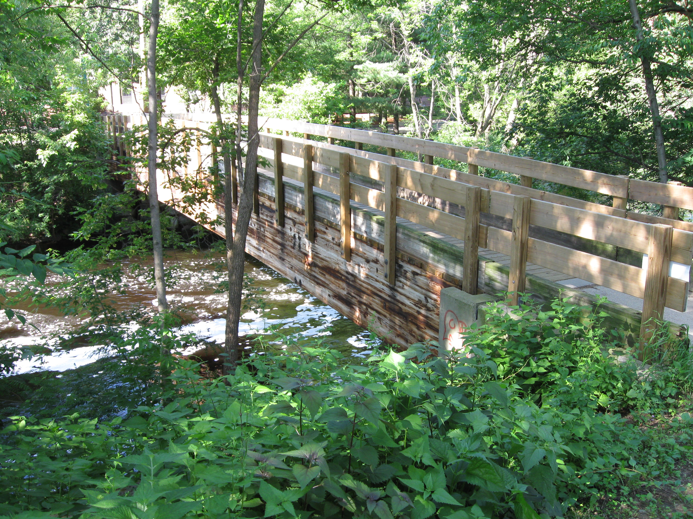</div>`)[0];
            popup_0875b25169c6437392323f13df2578fd.setContent(html_5950cce54f9a483e8e1ab0b47984f5da);
        

        marker_982c1e3fd6ce492da99ba6d00c91afef.bindPopup(popup_0875b25169c6437392323f13df2578fd)
        ;

        
    
    
            var marker_d32d9a59e6d04da29e7c4a01d79321a9 = L.marker(
                [42.3730194, -71.2361778],
                {}
            ).addTo(map_d3509080ee224f469ba298cdd85bfc87);
        
    
            var icon_721c59b43a864360a666c82bbab2b7aa = L.AwesomeMarkers.icon(
                {"extraClasses": "fa-rotate-0", "icon": "info-sign", "iconColor": "white", "markerColor": "red", "prefix": "glyphicon"}
            );
            marker_d32d9a59e6d04da29e7c4a01d79321a9.setIcon(icon_721c59b43a864360a666c82bbab2b7aa);
        
    
        var popup_57d630b5ff4a4d9789b770b36736e64b = L.popup({"maxWidth": "100%"});

        
            var html_fe437e01966240b59a57cd1aebefa54b = $(`<div id="html_fe437e01966240b59a57cd1aebefa54b" style="width: 100.0%; height: 100.0%;"><strong style="color:#967bb6;width=500%;height=500%">Waltham Dam or Moody Street Dam</strong><br></div>`)[0];
            popup_57d630b5ff4a4d9789b770b36736e64b.setContent(html_fe437e01966240b59a57cd1aebefa54b);
        

        marker_d32d9a59e6d04da29e7c4a01d79321a9.bindPopup(popup_57d630b5ff4a4d9789b770b36736e64b)
        ;

        
    
    
            var marker_5ea84dd103ca41d5a053c6632dd61af0 = L.marker(
                [42.373225, -71.2365639],
                {}
            ).addTo(map_d3509080ee224f469ba298cdd85bfc87);
        
    
            var icon_d59b727c7fcf4e7aa418f58c20f9893f = L.AwesomeMarkers.icon(
                {"extraClasses": "fa-rotate-0", "icon": "info-sign", "iconColor": "white", "markerColor": "green", "prefix": "glyphicon"}
            );
            marker_5ea84dd103ca41d5a053c6632dd61af0.setIcon(icon_d59b727c7fcf4e7aa418f58c20f9893f);
        
    
        var popup_060e89fb16404fbf82bb6bad3696d3d7 = L.popup({"maxWidth": "100%"});

        
            var html_0e14372baacc4f3090ee67445ec2af29 = $(`<div id="html_0e14372baacc4f3090ee67445ec2af29" style="width: 100.0%; height: 100.0%;"><strong style="color:#967bb6;width=500%;height=500%">Moody Street bridge</strong><br></div>`)[0];
            popup_060e89fb16404fbf82bb6bad3696d3d7.setContent(html_0e14372baacc4f3090ee67445ec2af29);
        

        marker_5ea84dd103ca41d5a053c6632dd61af0.bindPopup(popup_060e89fb16404fbf82bb6bad3696d3d7)
        ;

        
    
    
            var marker_349621352c474427b90cc6496d26b5e0 = L.marker(
                [42.3688639, -71.2435917],
                {}
            ).addTo(map_d3509080ee224f469ba298cdd85bfc87);
        
    
            var icon_17793ed528f548e59e86b010d0b2e9d8 = L.AwesomeMarkers.icon(
                {"extraClasses": "fa-rotate-0", "icon": "info-sign", "iconColor": "white", "markerColor": "green", "prefix": "glyphicon"}
            );
            marker_349621352c474427b90cc6496d26b5e0.setIcon(icon_17793ed528f548e59e86b010d0b2e9d8);
        
    
        var popup_c352e9e11e6346e89ee6db83f610fba5 = L.popup({"maxWidth": "100%"});

        
            var html_122f09540e814ebabc402fe9eee26dc5 = $(`<div id="html_122f09540e814ebabc402fe9eee26dc5" style="width: 100.0%; height: 100.0%;"><strong style="color:#967bb6;width=500%;height=500%">Gold Star Mothers Bridge</strong><br></div>`)[0];
            popup_c352e9e11e6346e89ee6db83f610fba5.setContent(html_122f09540e814ebabc402fe9eee26dc5);
        

        marker_349621352c474427b90cc6496d26b5e0.bindPopup(popup_c352e9e11e6346e89ee6db83f610fba5)
        ;

        
    
    
            var marker_04bca75f69134e5ba0442e00bbd1e572 = L.marker(
                [42.3439639, -71.2613917],
                {}
            ).addTo(map_d3509080ee224f469ba298cdd85bfc87);
        
    
            var icon_0858d418f1c5412cb3a4d017c5b617eb = L.AwesomeMarkers.icon(
                {"extraClasses": "fa-rotate-0", "icon": "info-sign", "iconColor": "white", "markerColor": "red", "prefix": "glyphicon"}
            );
            marker_04bca75f69134e5ba0442e00bbd1e572.setIcon(icon_0858d418f1c5412cb3a4d017c5b617eb);
        
    
        var popup_cff9684d2e42421bb3cc7e49ec679624 = L.popup({"maxWidth": "100%"});

        
            var html_3c8781834a0d4013a6a38b368b73c68a = $(`<div id="html_3c8781834a0d4013a6a38b368b73c68a" style="width: 100.0%; height: 100.0%;"><strong style="color:#967bb6;width=500%;height=500%">Commonwealth Avenue/South Avenue Bridge</strong><br></div>`)[0];
            popup_cff9684d2e42421bb3cc7e49ec679624.setContent(html_3c8781834a0d4013a6a38b368b73c68a);
        

        marker_04bca75f69134e5ba0442e00bbd1e572.bindPopup(popup_cff9684d2e42421bb3cc7e49ec679624)
        ;

        
    
    
            var marker_d0fd1c8ae2454e9c890317c201b6d3ca = L.marker(
                [42.3416, -71.2618083],
                {}
            ).addTo(map_d3509080ee224f469ba298cdd85bfc87);
        
    
            var icon_62d56134fd5b43f7bacc864af9f162e7 = L.AwesomeMarkers.icon(
                {"extraClasses": "fa-rotate-0", "icon": "info-sign", "iconColor": "white", "markerColor": "red", "prefix": "glyphicon"}
            );
            marker_d0fd1c8ae2454e9c890317c201b6d3ca.setIcon(icon_62d56134fd5b43f7bacc864af9f162e7);
        
    
        var popup_b4762b8bf0fb4104b9632603dda35ae1 = L.popup({"maxWidth": "100%"});

        
            var html_0329f537b0b543888c8d9d12c423575d = $(`<div id="html_0329f537b0b543888c8d9d12c423575d" style="width: 100.0%; height: 100.0%;"><strong style="color:#967bb6;width=500%;height=500%">I-90/I-95 connector</strong><br></div>`)[0];
            popup_b4762b8bf0fb4104b9632603dda35ae1.setContent(html_0329f537b0b543888c8d9d12c423575d);
        

        marker_d0fd1c8ae2454e9c890317c201b6d3ca.bindPopup(popup_b4762b8bf0fb4104b9632603dda35ae1)
        ;

        
    
    
            var marker_68b85128f51542cf84134de8e6b21d53 = L.marker(
                [42.3409806, -71.26095],
                {}
            ).addTo(map_d3509080ee224f469ba298cdd85bfc87);
        
    
            var icon_2d764616423a4e0eabdef2a2eaf30688 = L.AwesomeMarkers.icon(
                {"extraClasses": "fa-rotate-0", "icon": "info-sign", "iconColor": "white", "markerColor": "red", "prefix": "glyphicon"}
            );
            marker_68b85128f51542cf84134de8e6b21d53.setIcon(icon_2d764616423a4e0eabdef2a2eaf30688);
        
    
        var popup_38f0962abbbd491a93ea13b9f14ccb93 = L.popup({"maxWidth": "100%"});

        
            var html_c068813859f346aa95f8d6c22fa74b89 = $(`<div id="html_c068813859f346aa95f8d6c22fa74b89" style="width: 100.0%; height: 100.0%;"><strong style="color:#967bb6;width=500%;height=500%">Massachusetts Turnpike Boston Extension (Interstate 90)</strong><br></div>`)[0];
            popup_38f0962abbbd491a93ea13b9f14ccb93.setContent(html_c068813859f346aa95f8d6c22fa74b89);
        

        marker_68b85128f51542cf84134de8e6b21d53.bindPopup(popup_38f0962abbbd491a93ea13b9f14ccb93)
        ;

        
    
    
            var marker_fd02fd0f12694f049b4b02552af6a34e = L.marker(
                [42.3410056, -71.2597167],
                {}
            ).addTo(map_d3509080ee224f469ba298cdd85bfc87);
        
    
            var icon_e151b639e18f44a1a12414e56a79b5cd = L.AwesomeMarkers.icon(
                {"extraClasses": "fa-rotate-0", "icon": "info-sign", "iconColor": "white", "markerColor": "red", "prefix": "glyphicon"}
            );
            marker_fd02fd0f12694f049b4b02552af6a34e.setIcon(icon_e151b639e18f44a1a12414e56a79b5cd);
        
    
        var popup_1e1e46afa6154b628a62086017dd5823 = L.popup({"maxWidth": "100%"});

        
            var html_4a43826cc2974220a25f16c2d805afca = $(`<div id="html_4a43826cc2974220a25f16c2d805afca" style="width: 100.0%; height: 100.0%;"><strong style="color:#967bb6;width=500%;height=500%">I-90/I-95 connector</strong><br></div>`)[0];
            popup_1e1e46afa6154b628a62086017dd5823.setContent(html_4a43826cc2974220a25f16c2d805afca);
        

        marker_fd02fd0f12694f049b4b02552af6a34e.bindPopup(popup_1e1e46afa6154b628a62086017dd5823)
        ;

        
    
    
            var marker_69748b0dea0241d799e7da3881d59d35 = L.marker(
                [42.3412111, -71.2582583],
                {}
            ).addTo(map_d3509080ee224f469ba298cdd85bfc87);
        
    
            var icon_0cfdb365cd864e86bf3c80e80c034ff9 = L.AwesomeMarkers.icon(
                {"extraClasses": "fa-rotate-0", "icon": "info-sign", "iconColor": "white", "markerColor": "red", "prefix": "glyphicon"}
            );
            marker_69748b0dea0241d799e7da3881d59d35.setIcon(icon_0cfdb365cd864e86bf3c80e80c034ff9);
        
    
        var popup_b792c2f02d654acf895b6037fce3b415 = L.popup({"maxWidth": "100%"});

        
            var html_927b15c334f04d9bb7534afe6c2bb6bc = $(`<div id="html_927b15c334f04d9bb7534afe6c2bb6bc" style="width: 100.0%; height: 100.0%;"><strong style="color:#967bb6;width=500%;height=500%">Footbridge from Riverside Rd., Newton to Recreation Rd., Weston</strong><br></div>`)[0];
            popup_b792c2f02d654acf895b6037fce3b415.setContent(html_927b15c334f04d9bb7534afe6c2bb6bc);
        

        marker_69748b0dea0241d799e7da3881d59d35.bindPopup(popup_b792c2f02d654acf895b6037fce3b415)
        ;

        
    
    
            var marker_ecc7649e07bd4a06826695ce2a1d0ac3 = L.marker(
                [42.3412111, -71.2582583],
                {}
            ).addTo(map_d3509080ee224f469ba298cdd85bfc87);
        
    
            var icon_5e29b657c19e43a5a99628ac9c215b8c = L.AwesomeMarkers.icon(
                {"extraClasses": "fa-rotate-0", "icon": "info-sign", "iconColor": "white", "markerColor": "green", "prefix": "glyphicon"}
            );
            marker_ecc7649e07bd4a06826695ce2a1d0ac3.setIcon(icon_5e29b657c19e43a5a99628ac9c215b8c);
        
    
        var popup_cc58d10e08d844119148a0fe1afb749e = L.popup({"maxWidth": "100%"});

        
            var html_3b05ca95e4ff4ed1a978af61fc3dc0ea = $(`<div id="html_3b05ca95e4ff4ed1a978af61fc3dc0ea" style="width: 100.0%; height: 100.0%;"><strong style="color:#967bb6;width=500%;height=500%">Road bridge from Riverside Rd., Newton to Recreation Rd., Weston</strong><br></div>`)[0];
            popup_cc58d10e08d844119148a0fe1afb749e.setContent(html_3b05ca95e4ff4ed1a978af61fc3dc0ea);
        

        marker_ecc7649e07bd4a06826695ce2a1d0ac3.bindPopup(popup_cc58d10e08d844119148a0fe1afb749e)
        ;

        
    
    
            var marker_d8ef066860a74120bf8d64b8d72e6bcb = L.marker(
                [42.3406806, -71.2570667],
                {}
            ).addTo(map_d3509080ee224f469ba298cdd85bfc87);
        
    
            var icon_99d7a2be2b5a47eca0e31467313fc4ef = L.AwesomeMarkers.icon(
                {"extraClasses": "fa-rotate-0", "icon": "info-sign", "iconColor": "white", "markerColor": "red", "prefix": "glyphicon"}
            );
            marker_d8ef066860a74120bf8d64b8d72e6bcb.setIcon(icon_99d7a2be2b5a47eca0e31467313fc4ef);
        
    
        var popup_2044d662abb345bd97de3ae853af4987 = L.popup({"maxWidth": "100%"});

        
            var html_6335fddfa2c74b73ba81669df5e5a01a = $(`<div id="html_6335fddfa2c74b73ba81669df5e5a01a" style="width: 100.0%; height: 100.0%;"><strong style="color:#967bb6;width=500%;height=500%">CSX/MBTA railroad bridge</strong><br></div>`)[0];
            popup_2044d662abb345bd97de3ae853af4987.setContent(html_6335fddfa2c74b73ba81669df5e5a01a);
        

        marker_d8ef066860a74120bf8d64b8d72e6bcb.bindPopup(popup_2044d662abb345bd97de3ae853af4987)
        ;

        
    
    
            var marker_9e2d4874b03e4c7ab5d5154ec2d7449e = L.marker(
                [42.3400444, -71.2559417],
                {}
            ).addTo(map_d3509080ee224f469ba298cdd85bfc87);
        
    
            var icon_97480a5e80744ead9ae2b08ffc3310f7 = L.AwesomeMarkers.icon(
                {"extraClasses": "fa-rotate-0", "icon": "info-sign", "iconColor": "white", "markerColor": "green", "prefix": "glyphicon"}
            );
            marker_9e2d4874b03e4c7ab5d5154ec2d7449e.setIcon(icon_97480a5e80744ead9ae2b08ffc3310f7);
        
    
        var popup_f1b3371ea3cb49cc801bab41ad8f3d33 = L.popup({"maxWidth": "100%"});

        
            var html_12490bab599641cc8911f29adf2873f2 = $(`<div id="html_12490bab599641cc8911f29adf2873f2" style="width: 100.0%; height: 100.0%;"><strong style="color:#967bb6;width=500%;height=500%">Riverside Park Footbridge</strong><br></div>`)[0];
            popup_f1b3371ea3cb49cc801bab41ad8f3d33.setContent(html_12490bab599641cc8911f29adf2873f2);
        

        marker_9e2d4874b03e4c7ab5d5154ec2d7449e.bindPopup(popup_f1b3371ea3cb49cc801bab41ad8f3d33)
        ;

        
    
    
            var marker_36af814a12a94f4bb10cefc8ad3adce9 = L.marker(
                [42.33762944, -71.2573778],
                {}
            ).addTo(map_d3509080ee224f469ba298cdd85bfc87);
        
    
            var icon_4df9df7185904a5a9208c974aa43d5d7 = L.AwesomeMarkers.icon(
                {"extraClasses": "fa-rotate-0", "icon": "info-sign", "iconColor": "white", "markerColor": "red", "prefix": "glyphicon"}
            );
            marker_36af814a12a94f4bb10cefc8ad3adce9.setIcon(icon_4df9df7185904a5a9208c974aa43d5d7);
        
    
        var popup_1c45b56babb74bdcb4c8a0dc5da69291 = L.popup({"maxWidth": "100%"});

        
            var html_f64feccd8f8549a9b151c07c450c26b6 = $(`<div id="html_f64feccd8f8549a9b151c07c450c26b6" style="width: 100.0%; height: 100.0%;"><strong style="color:#967bb6;width=500%;height=500%">I-95 offramp</strong><br></div>`)[0];
            popup_1c45b56babb74bdcb4c8a0dc5da69291.setContent(html_f64feccd8f8549a9b151c07c450c26b6);
        

        marker_36af814a12a94f4bb10cefc8ad3adce9.bindPopup(popup_1c45b56babb74bdcb4c8a0dc5da69291)
        ;

        
    
    
            var marker_15fbf1ee5db64bd1889ab6cb4bf2fca9 = L.marker(
                [42.3366194, -71.2586222],
                {}
            ).addTo(map_d3509080ee224f469ba298cdd85bfc87);
        
    
            var icon_52db02a857c1423192eebcc3940328ac = L.AwesomeMarkers.icon(
                {"extraClasses": "fa-rotate-0", "icon": "info-sign", "iconColor": "white", "markerColor": "red", "prefix": "glyphicon"}
            );
            marker_15fbf1ee5db64bd1889ab6cb4bf2fca9.setIcon(icon_52db02a857c1423192eebcc3940328ac);
        
    
        var popup_4c6c88633b434127b5d0f65003f1313c = L.popup({"maxWidth": "100%"});

        
            var html_da81136a5f0a40f9801be40fe1db2400 = $(`<div id="html_da81136a5f0a40f9801be40fe1db2400" style="width: 100.0%; height: 100.0%;"><strong style="color:#967bb6;width=500%;height=500%">I‑95 / Route 128</strong><br></div>`)[0];
            popup_4c6c88633b434127b5d0f65003f1313c.setContent(html_da81136a5f0a40f9801be40fe1db2400);
        

        marker_15fbf1ee5db64bd1889ab6cb4bf2fca9.bindPopup(popup_4c6c88633b434127b5d0f65003f1313c)
        ;

        
    
    
            var marker_b3ece9d1eab44a908d3abe66d44b3ce9 = L.marker(
                [42.3305667, -71.267925],
                {}
            ).addTo(map_d3509080ee224f469ba298cdd85bfc87);
        
    
            var icon_ddd1308cb6484e88bae2859dad75421d = L.AwesomeMarkers.icon(
                {"extraClasses": "fa-rotate-0", "icon": "info-sign", "iconColor": "white", "markerColor": "red", "prefix": "glyphicon"}
            );
            marker_b3ece9d1eab44a908d3abe66d44b3ce9.setIcon(icon_ddd1308cb6484e88bae2859dad75421d);
        
    
        var popup_d4fdc3044e184a2eba18311c9f95e774 = L.popup({"maxWidth": "100%"});

        
            var html_a048260a5bfd4ed5a834a0538058b4fb = $(`<div id="html_a048260a5bfd4ed5a834a0538058b4fb" style="width: 100.0%; height: 100.0%;"><strong style="color:#967bb6;width=500%;height=500%">Concord Street/Park Road bridge</strong><br></div>`)[0];
            popup_d4fdc3044e184a2eba18311c9f95e774.setContent(html_a048260a5bfd4ed5a834a0538058b4fb);
        

        marker_b3ece9d1eab44a908d3abe66d44b3ce9.bindPopup(popup_d4fdc3044e184a2eba18311c9f95e774)
        ;

        
    
    
            var marker_267e96b2bcff4d408e6bd1969e999c65 = L.marker(
                [42.3283778, -71.2700806],
                {}
            ).addTo(map_d3509080ee224f469ba298cdd85bfc87);
        
    
            var icon_3dc553f55e5d427ba269b7763eff7b6c = L.AwesomeMarkers.icon(
                {"extraClasses": "fa-rotate-0", "icon": "info-sign", "iconColor": "white", "markerColor": "red", "prefix": "glyphicon"}
            );
            marker_267e96b2bcff4d408e6bd1969e999c65.setIcon(icon_3dc553f55e5d427ba269b7763eff7b6c);
        
    
        var popup_93125f48119a42e5a35a0377d7e2584d = L.popup({"maxWidth": "100%"});

        
            var html_8a7964b319c543cfa3a6194ff8805ad8 = $(`<div id="html_8a7964b319c543cfa3a6194ff8805ad8" style="width: 100.0%; height: 100.0%;"><strong style="color:#967bb6;width=500%;height=500%">Leo J. Martin Golf Club Footbridge</strong><br></div>`)[0];
            popup_93125f48119a42e5a35a0377d7e2584d.setContent(html_8a7964b319c543cfa3a6194ff8805ad8);
        

        marker_267e96b2bcff4d408e6bd1969e999c65.bindPopup(popup_93125f48119a42e5a35a0377d7e2584d)
        ;

        
    
    
            var marker_960184c205f641bf88ae73411e344b90 = L.marker(
                [42.3267611, -71.2612722],
                {}
            ).addTo(map_d3509080ee224f469ba298cdd85bfc87);
        
    
            var icon_75cd4170d4544cddbfaeeba286b6c105 = L.AwesomeMarkers.icon(
                {"extraClasses": "fa-rotate-0", "icon": "info-sign", "iconColor": "white", "markerColor": "red", "prefix": "glyphicon"}
            );
            marker_960184c205f641bf88ae73411e344b90.setIcon(icon_75cd4170d4544cddbfaeeba286b6c105);
        
    
        var popup_54bb0ab709fd4c91b513eb98fe30fd83 = L.popup({"maxWidth": "100%"});

        
            var html_45b643c623ee439eb16483ab39f3577e = $(`<div id="html_45b643c623ee439eb16483ab39f3577e" style="width: 100.0%; height: 100.0%;"><strong style="color:#967bb6;width=500%;height=500%">Newton–Wellesley Lower Falls Pedestrian and Bicycle Bridge</strong><br></div>`)[0];
            popup_54bb0ab709fd4c91b513eb98fe30fd83.setContent(html_45b643c623ee439eb16483ab39f3577e);
        

        marker_960184c205f641bf88ae73411e344b90.bindPopup(popup_54bb0ab709fd4c91b513eb98fe30fd83)
        ;

        
    
    
            var marker_7520e73bfb654c878bf7ad2ba884a0ed = L.marker(
                [42.3253194, -71.2583528],
                {}
            ).addTo(map_d3509080ee224f469ba298cdd85bfc87);
        
    
            var icon_5e9fae63174f429f9c43acbee084771e = L.AwesomeMarkers.icon(
                {"extraClasses": "fa-rotate-0", "icon": "info-sign", "iconColor": "white", "markerColor": "red", "prefix": "glyphicon"}
            );
            marker_7520e73bfb654c878bf7ad2ba884a0ed.setIcon(icon_5e9fae63174f429f9c43acbee084771e);
        
    
        var popup_0d26e7a186564e1cb26516123d751baf = L.popup({"maxWidth": "100%"});

        
            var html_657351998a514d61a42a04e2a3ac88d3 = $(`<div id="html_657351998a514d61a42a04e2a3ac88d3" style="width: 100.0%; height: 100.0%;"><strong style="color:#967bb6;width=500%;height=500%">Washington Street Bridge</strong><br></div>`)[0];
            popup_0d26e7a186564e1cb26516123d751baf.setContent(html_657351998a514d61a42a04e2a3ac88d3);
        

        marker_7520e73bfb654c878bf7ad2ba884a0ed.bindPopup(popup_0d26e7a186564e1cb26516123d751baf)
        ;

        
    
    
            var marker_2e019a32531e4567a5873449f9e39431 = L.marker(
                [42.3254833, -71.2543833],
                {}
            ).addTo(map_d3509080ee224f469ba298cdd85bfc87);
        
    
            var icon_53e49f044baf4bf99ee62f0744322a30 = L.AwesomeMarkers.icon(
                {"extraClasses": "fa-rotate-0", "icon": "info-sign", "iconColor": "white", "markerColor": "red", "prefix": "glyphicon"}
            );
            marker_2e019a32531e4567a5873449f9e39431.setIcon(icon_53e49f044baf4bf99ee62f0744322a30);
        
    
        var popup_2644498fa5694626a35a015a699294f1 = L.popup({"maxWidth": "100%"});

        
            var html_271ba68565cc48dea0f165a60924c508 = $(`<div id="html_271ba68565cc48dea0f165a60924c508" style="width: 100.0%; height: 100.0%;"><strong style="color:#967bb6;width=500%;height=500%">Finlay Dam</strong><br></div>`)[0];
            popup_2644498fa5694626a35a015a699294f1.setContent(html_271ba68565cc48dea0f165a60924c508);
        

        marker_2e019a32531e4567a5873449f9e39431.bindPopup(popup_2644498fa5694626a35a015a699294f1)
        ;

        
    
    
            var marker_3e511c076bd24efc8e2495b7b4570791 = L.marker(
                [42.325444, -71.254389],
                {}
            ).addTo(map_d3509080ee224f469ba298cdd85bfc87);
        
    
            var icon_152d3bdda4f4458b881913765e41d734 = L.AwesomeMarkers.icon(
                {"extraClasses": "fa-rotate-0", "icon": "info-sign", "iconColor": "white", "markerColor": "red", "prefix": "glyphicon"}
            );
            marker_3e511c076bd24efc8e2495b7b4570791.setIcon(icon_152d3bdda4f4458b881913765e41d734);
        
    
        var popup_1764874e41404518af8d30abe815b845 = L.popup({"maxWidth": "100%"});

        
            var html_71f5ead060624ad3b10aa5d18395ea0a = $(`<div id="html_71f5ead060624ad3b10aa5d18395ea0a" style="width: 100.0%; height: 100.0%;"><strong style="color:#967bb6;width=500%;height=500%">Cordingly Dam and Falls</strong><br></div>`)[0];
            popup_1764874e41404518af8d30abe815b845.setContent(html_71f5ead060624ad3b10aa5d18395ea0a);
        

        marker_3e511c076bd24efc8e2495b7b4570791.bindPopup(popup_1764874e41404518af8d30abe815b845)
        ;

        
    
    
            var marker_5e32f4e4b04d4c98adeddae70eb89891 = L.marker(
                [42.32583, -71.25444],
                {}
            ).addTo(map_d3509080ee224f469ba298cdd85bfc87);
        
    
            var icon_3d53929342f146d88c7032af86350a14 = L.AwesomeMarkers.icon(
                {"extraClasses": "fa-rotate-0", "icon": "info-sign", "iconColor": "white", "markerColor": "red", "prefix": "glyphicon"}
            );
            marker_5e32f4e4b04d4c98adeddae70eb89891.setIcon(icon_3d53929342f146d88c7032af86350a14);
        
    
        var popup_51d4a9680ee04452a8857233af43b934 = L.popup({"maxWidth": "100%"});

        
            var html_a0df80c881b2469c8dc0c229b952c443 = $(`<div id="html_a0df80c881b2469c8dc0c229b952c443" style="width: 100.0%; height: 100.0%;"><strong style="color:#967bb6;width=500%;height=500%">Mary Hunnewell Fyffe Footbridge</strong><br></div>`)[0];
            popup_51d4a9680ee04452a8857233af43b934.setContent(html_a0df80c881b2469c8dc0c229b952c443);
        

        marker_5e32f4e4b04d4c98adeddae70eb89891.bindPopup(popup_51d4a9680ee04452a8857233af43b934)
        ;

        
    
    
            var marker_ccdcbfd31cdc4be79a0cdccd466c6764 = L.marker(
                [42.326775, -71.2531722],
                {}
            ).addTo(map_d3509080ee224f469ba298cdd85bfc87);
        
    
            var icon_ba45f899a3454732880f2fc7956c134d = L.AwesomeMarkers.icon(
                {"extraClasses": "fa-rotate-0", "icon": "info-sign", "iconColor": "white", "markerColor": "red", "prefix": "glyphicon"}
            );
            marker_ccdcbfd31cdc4be79a0cdccd466c6764.setIcon(icon_ba45f899a3454732880f2fc7956c134d);
        
    
        var popup_9e90f5c411354cceba1ef926bdacf028 = L.popup({"maxWidth": "100%"});

        
            var html_9fe27b65f1b240baafc7c7d4ed7dd807 = $(`<div id="html_9fe27b65f1b240baafc7c7d4ed7dd807" style="width: 100.0%; height: 100.0%;"><strong style="color:#967bb6;width=500%;height=500%">Wales Street/Walnut Street Bridge</strong><br></div>`)[0];
            popup_9e90f5c411354cceba1ef926bdacf028.setContent(html_9fe27b65f1b240baafc7c7d4ed7dd807);
        

        marker_ccdcbfd31cdc4be79a0cdccd466c6764.bindPopup(popup_9e90f5c411354cceba1ef926bdacf028)
        ;

        
    
    
            var marker_7006a68773bb42aa97a1e74065e7b775 = L.marker(
                [42.3243, -71.2499861],
                {}
            ).addTo(map_d3509080ee224f469ba298cdd85bfc87);
        
    
            var icon_b155f6dc8ca34fab8b5204c4c7261d92 = L.AwesomeMarkers.icon(
                {"extraClasses": "fa-rotate-0", "icon": "info-sign", "iconColor": "white", "markerColor": "red", "prefix": "glyphicon"}
            );
            marker_7006a68773bb42aa97a1e74065e7b775.setIcon(icon_b155f6dc8ca34fab8b5204c4c7261d92);
        
    
        var popup_9c17bada0ab147a0b120d83a6528dd0a = L.popup({"maxWidth": "100%"});

        
            var html_9859f217bdcf44549b5cc65961271a8a = $(`<div id="html_9859f217bdcf44549b5cc65961271a8a" style="width: 100.0%; height: 100.0%;"><strong style="color:#967bb6;width=500%;height=500%">Cochituate Aqueduct</strong><br></div>`)[0];
            popup_9c17bada0ab147a0b120d83a6528dd0a.setContent(html_9859f217bdcf44549b5cc65961271a8a);
        

        marker_7006a68773bb42aa97a1e74065e7b775.bindPopup(popup_9c17bada0ab147a0b120d83a6528dd0a)
        ;

        
    
    
            var marker_e0d9f58634b54666a92762777574f40c = L.marker(
                [42.3236361, -71.2492667],
                {}
            ).addTo(map_d3509080ee224f469ba298cdd85bfc87);
        
    
            var icon_7eacc119bd914f5894f82caef51a1028 = L.AwesomeMarkers.icon(
                {"extraClasses": "fa-rotate-0", "icon": "info-sign", "iconColor": "white", "markerColor": "red", "prefix": "glyphicon"}
            );
            marker_e0d9f58634b54666a92762777574f40c.setIcon(icon_7eacc119bd914f5894f82caef51a1028);
        
    
        var popup_8731784b259b437e9a8058b195aff853 = L.popup({"maxWidth": "100%"});

        
            var html_54d182219ec9499395c22f415ec36b0d = $(`<div id="html_54d182219ec9499395c22f415ec36b0d" style="width: 100.0%; height: 100.0%;"><strong style="color:#967bb6;width=500%;height=500%">I‑95 / Route 128</strong><br></div>`)[0];
            popup_8731784b259b437e9a8058b195aff853.setContent(html_54d182219ec9499395c22f415ec36b0d);
        

        marker_e0d9f58634b54666a92762777574f40c.bindPopup(popup_8731784b259b437e9a8058b195aff853)
        ;

        
    
    
            var marker_8c48f9486a8e4b20bb78c5924572bac9 = L.marker(
                [42.316806, -71.228111],
                {}
            ).addTo(map_d3509080ee224f469ba298cdd85bfc87);
        
    
            var icon_88e4e72567864c2fa61cf28d6e421567 = L.AwesomeMarkers.icon(
                {"extraClasses": "fa-rotate-0", "icon": "info-sign", "iconColor": "white", "markerColor": "red", "prefix": "glyphicon"}
            );
            marker_8c48f9486a8e4b20bb78c5924572bac9.setIcon(icon_88e4e72567864c2fa61cf28d6e421567);
        
    
        var popup_6c06c7145f24401fbf513e48728de4e3 = L.popup({"maxWidth": "100%"});

        
            var html_35d956836b2b4d3e9749c2f3448af094 = $(`<div id="html_35d956836b2b4d3e9749c2f3448af094" style="width: 100.0%; height: 100.0%;"><strong style="color:#967bb6;width=500%;height=500%">Boston-Worcester Turnpike Bridge</strong><br></div>`)[0];
            popup_6c06c7145f24401fbf513e48728de4e3.setContent(html_35d956836b2b4d3e9749c2f3448af094);
        

        marker_8c48f9486a8e4b20bb78c5924572bac9.bindPopup(popup_6c06c7145f24401fbf513e48728de4e3)
        ;

        
    
    
            var marker_3419c6b270fa4a1591b496fd53457cc0 = L.marker(
                [42.316556, -71.228083],
                {}
            ).addTo(map_d3509080ee224f469ba298cdd85bfc87);
        
    
            var icon_2db7c7c287d54ceeab3e80904c987c38 = L.AwesomeMarkers.icon(
                {"extraClasses": "fa-rotate-0", "icon": "info-sign", "iconColor": "white", "markerColor": "red", "prefix": "glyphicon"}
            );
            marker_3419c6b270fa4a1591b496fd53457cc0.setIcon(icon_2db7c7c287d54ceeab3e80904c987c38);
        
    
        var popup_20eca0ff14ea42aba4f78befa7aa946f = L.popup({"maxWidth": "100%"});

        
            var html_375a79037ec34848b90bbd9614c05d6b = $(`<div id="html_375a79037ec34848b90bbd9614c05d6b" style="width: 100.0%; height: 100.0%;"><strong style="color:#967bb6;width=500%;height=500%">Metropolitan Circular Dam</strong><br></div>`)[0];
            popup_20eca0ff14ea42aba4f78befa7aa946f.setContent(html_375a79037ec34848b90bbd9614c05d6b);
        

        marker_3419c6b270fa4a1591b496fd53457cc0.bindPopup(popup_20eca0ff14ea42aba4f78befa7aa946f)
        ;

        
    
    
            var marker_92911099b4a74b7e8a056c634cbde6a3 = L.marker(
                [42.3147583, -71.2269917],
                {}
            ).addTo(map_d3509080ee224f469ba298cdd85bfc87);
        
    
            var icon_f4ff8b0a871643c390375a08ed993baa = L.AwesomeMarkers.icon(
                {"extraClasses": "fa-rotate-0", "icon": "info-sign", "iconColor": "white", "markerColor": "red", "prefix": "glyphicon"}
            );
            marker_92911099b4a74b7e8a056c634cbde6a3.setIcon(icon_f4ff8b0a871643c390375a08ed993baa);
        
    
        var popup_84ff72930f9f4a05a3f095b3b50f1ae9 = L.popup({"maxWidth": "100%"});

        
            var html_32d336cc63344f39a9fddd3547e065b0 = $(`<div id="html_32d336cc63344f39a9fddd3547e065b0" style="width: 100.0%; height: 100.0%;"><strong style="color:#967bb6;width=500%;height=500%">Echo Bridge</strong><br></div>`)[0];
            popup_84ff72930f9f4a05a3f095b3b50f1ae9.setContent(html_32d336cc63344f39a9fddd3547e065b0);
        

        marker_92911099b4a74b7e8a056c634cbde6a3.bindPopup(popup_84ff72930f9f4a05a3f095b3b50f1ae9)
        ;

        
    
    
            var marker_004951c699b34292b5fb547999d67085 = L.marker(
                [42.3138222, -71.2263389],
                {}
            ).addTo(map_d3509080ee224f469ba298cdd85bfc87);
        
    
            var icon_df395f11ff0d4e05a66ebb2f4ad70ff9 = L.AwesomeMarkers.icon(
                {"extraClasses": "fa-rotate-0", "icon": "info-sign", "iconColor": "white", "markerColor": "red", "prefix": "glyphicon"}
            );
            marker_004951c699b34292b5fb547999d67085.setIcon(icon_df395f11ff0d4e05a66ebb2f4ad70ff9);
        
    
        var popup_c6d86c9b7d3d4addb6cbfc3d5be77f18 = L.popup({"maxWidth": "100%"});

        
            var html_7544531b5f564d2b9695d12d24f62b36 = $(`<div id="html_7544531b5f564d2b9695d12d24f62b36" style="width: 100.0%; height: 100.0%;"><strong style="color:#967bb6;width=500%;height=500%">Silk Mill Dam</strong><br></div>`)[0];
            popup_c6d86c9b7d3d4addb6cbfc3d5be77f18.setContent(html_7544531b5f564d2b9695d12d24f62b36);
        

        marker_004951c699b34292b5fb547999d67085.bindPopup(popup_c6d86c9b7d3d4addb6cbfc3d5be77f18)
        ;

        
    
    
            var marker_d3a44227ca494413afc2ba803a6d5e26 = L.marker(
                [42.3123056, -71.2270472],
                {}
            ).addTo(map_d3509080ee224f469ba298cdd85bfc87);
        
    
            var icon_7c5bdaddc7ac437d9520b2394de43cb3 = L.AwesomeMarkers.icon(
                {"extraClasses": "fa-rotate-0", "icon": "info-sign", "iconColor": "white", "markerColor": "red", "prefix": "glyphicon"}
            );
            marker_d3a44227ca494413afc2ba803a6d5e26.setIcon(icon_7c5bdaddc7ac437d9520b2394de43cb3);
        
    
        var popup_0995974d7e864f3790b123e8c9ea4ef3 = L.popup({"maxWidth": "100%"});

        
            var html_0e8a01f9943347ad8fb85dc45a99ba22 = $(`<div id="html_0e8a01f9943347ad8fb85dc45a99ba22" style="width: 100.0%; height: 100.0%;"><strong style="color:#967bb6;width=500%;height=500%">Elliot Street/Central Avenue Bridge</strong><br></div>`)[0];
            popup_0995974d7e864f3790b123e8c9ea4ef3.setContent(html_0e8a01f9943347ad8fb85dc45a99ba22);
        

        marker_d3a44227ca494413afc2ba803a6d5e26.bindPopup(popup_0995974d7e864f3790b123e8c9ea4ef3)
        ;

        
    
    
            var marker_e1dd4534124f4bf383408eb76c9d0a43 = L.marker(
                [42.3072444, -71.2239778],
                {}
            ).addTo(map_d3509080ee224f469ba298cdd85bfc87);
        
    
            var icon_318bfd9234a846828bfbf1bc1d1b1ee9 = L.AwesomeMarkers.icon(
                {"extraClasses": "fa-rotate-0", "icon": "info-sign", "iconColor": "white", "markerColor": "red", "prefix": "glyphicon"}
            );
            marker_e1dd4534124f4bf383408eb76c9d0a43.setIcon(icon_318bfd9234a846828bfbf1bc1d1b1ee9);
        
    
        var popup_dc921f3fd0494454b6f05b24ce8777ef = L.popup({"maxWidth": "100%"});

        
            var html_da2c9f4a556f4cd5a954b8991e571426 = $(`<div id="html_da2c9f4a556f4cd5a954b8991e571426" style="width: 100.0%; height: 100.0%;"><strong style="color:#967bb6;width=500%;height=500%">rail bridge</strong><br></div>`)[0];
            popup_dc921f3fd0494454b6f05b24ce8777ef.setContent(html_da2c9f4a556f4cd5a954b8991e571426);
        

        marker_e1dd4534124f4bf383408eb76c9d0a43.bindPopup(popup_dc921f3fd0494454b6f05b24ce8777ef)
        ;

        
    
    
            var marker_48f71aa4bffd444d8782344cf241fbee = L.marker(
                [42.3065306, -71.21695],
                {}
            ).addTo(map_d3509080ee224f469ba298cdd85bfc87);
        
    
            var icon_29ecc1bf2a2841189706435e0d3baf1f = L.AwesomeMarkers.icon(
                {"extraClasses": "fa-rotate-0", "icon": "info-sign", "iconColor": "white", "markerColor": "red", "prefix": "glyphicon"}
            );
            marker_48f71aa4bffd444d8782344cf241fbee.setIcon(icon_29ecc1bf2a2841189706435e0d3baf1f);
        
    
        var popup_f8975649ef984fcba0644421575802a3 = L.popup({"maxWidth": "100%"});

        
            var html_0889e253b33148db82d8972c3ede5ac7 = $(`<div id="html_0889e253b33148db82d8972c3ede5ac7" style="width: 100.0%; height: 100.0%;"><strong style="color:#967bb6;width=500%;height=500%">Needham Street Bridge</strong><br></div>`)[0];
            popup_f8975649ef984fcba0644421575802a3.setContent(html_0889e253b33148db82d8972c3ede5ac7);
        

        marker_48f71aa4bffd444d8782344cf241fbee.bindPopup(popup_f8975649ef984fcba0644421575802a3)
        ;

        
    
    
            var marker_51b084cc3bd64a85a8f75f9d0cd5cb7e = L.marker(
                [42.3060139, -71.2129806],
                {}
            ).addTo(map_d3509080ee224f469ba298cdd85bfc87);
        
    
            var icon_434997bb2b7945d986074b9fc8570fa3 = L.AwesomeMarkers.icon(
                {"extraClasses": "fa-rotate-0", "icon": "info-sign", "iconColor": "white", "markerColor": "red", "prefix": "glyphicon"}
            );
            marker_51b084cc3bd64a85a8f75f9d0cd5cb7e.setIcon(icon_434997bb2b7945d986074b9fc8570fa3);
        
    
        var popup_d2211671f47e4f3ebe976b1f502af804 = L.popup({"maxWidth": "100%"});

        
            var html_3b261cbc4ea24ca8be252fad42f27f99 = $(`<div id="html_3b261cbc4ea24ca8be252fad42f27f99" style="width: 100.0%; height: 100.0%;"><strong style="color:#967bb6;width=500%;height=500%">rail bridge</strong><br></div>`)[0];
            popup_d2211671f47e4f3ebe976b1f502af804.setContent(html_3b261cbc4ea24ca8be252fad42f27f99);
        

        marker_51b084cc3bd64a85a8f75f9d0cd5cb7e.bindPopup(popup_d2211671f47e4f3ebe976b1f502af804)
        ;

        
    
    
            var marker_634ea32648364c0eb0336fa0756f4662 = L.marker(
                [42.2971028, -71.2078111],
                {}
            ).addTo(map_d3509080ee224f469ba298cdd85bfc87);
        
    
            var icon_0193f9b1509c45f289c78d095fc9f932 = L.AwesomeMarkers.icon(
                {"extraClasses": "fa-rotate-0", "icon": "info-sign", "iconColor": "white", "markerColor": "red", "prefix": "glyphicon"}
            );
            marker_634ea32648364c0eb0336fa0756f4662.setIcon(icon_0193f9b1509c45f289c78d095fc9f932);
        
    
        var popup_edce02a0d47245adb1f2cdac01b5bfa6 = L.popup({"maxWidth": "100%"});

        
            var html_7547d4d28dcc4109b05595a4e66500a8 = $(`<div id="html_7547d4d28dcc4109b05595a4e66500a8" style="width: 100.0%; height: 100.0%;"><strong style="color:#967bb6;width=500%;height=500%">Kendrick Street/Nahanton Street Bridge</strong><br></div>`)[0];
            popup_edce02a0d47245adb1f2cdac01b5bfa6.setContent(html_7547d4d28dcc4109b05595a4e66500a8);
        

        marker_634ea32648364c0eb0336fa0756f4662.bindPopup(popup_edce02a0d47245adb1f2cdac01b5bfa6)
        ;

        
    
    
            var marker_5b7e4d92c6d846168eb0cc647f37d4b0 = L.marker(
                [42.2794917, -71.1852472],
                {}
            ).addTo(map_d3509080ee224f469ba298cdd85bfc87);
        
    
            var icon_770781b2729d4017a9d177ec7b7e33c6 = L.AwesomeMarkers.icon(
                {"extraClasses": "fa-rotate-0", "icon": "info-sign", "iconColor": "white", "markerColor": "red", "prefix": "glyphicon"}
            );
            marker_5b7e4d92c6d846168eb0cc647f37d4b0.setIcon(icon_770781b2729d4017a9d177ec7b7e33c6);
        
    
        var popup_44dd64d4fe41442c8b801ebff6785e18 = L.popup({"maxWidth": "100%"});

        
            var html_7d9291baaa2f47dab3303bce2ccb7236 = $(`<div id="html_7d9291baaa2f47dab3303bce2ccb7236" style="width: 100.0%; height: 100.0%;"><strong style="color:#967bb6;width=500%;height=500%">MBTA Commuter Rail Needham Line bridge</strong><br></div>`)[0];
            popup_44dd64d4fe41442c8b801ebff6785e18.setContent(html_7d9291baaa2f47dab3303bce2ccb7236);
        

        marker_5b7e4d92c6d846168eb0cc647f37d4b0.bindPopup(popup_44dd64d4fe41442c8b801ebff6785e18)
        ;

        
    
    
            var marker_7d7d8fb1c51040f4b20624a2d2dda81a = L.marker(
                [42.2708389, -71.1733056],
                {}
            ).addTo(map_d3509080ee224f469ba298cdd85bfc87);
        
    
            var icon_f6f82200538a494493d64ffde4fd9f94 = L.AwesomeMarkers.icon(
                {"extraClasses": "fa-rotate-0", "icon": "info-sign", "iconColor": "white", "markerColor": "red", "prefix": "glyphicon"}
            );
            marker_7d7d8fb1c51040f4b20624a2d2dda81a.setIcon(icon_f6f82200538a494493d64ffde4fd9f94);
        
    
        var popup_60d4be812962498abd4cc8342e9e6bb0 = L.popup({"maxWidth": "100%"});

        
            var html_7fd73af2b7054c00a830f19fb9c4947a = $(`<div id="html_7fd73af2b7054c00a830f19fb9c4947a" style="width: 100.0%; height: 100.0%;"><strong style="color:#967bb6;width=500%;height=500%">Honorable Robert L. Cawley Bridge</strong><br></div>`)[0];
            popup_60d4be812962498abd4cc8342e9e6bb0.setContent(html_7fd73af2b7054c00a830f19fb9c4947a);
        

        marker_7d7d8fb1c51040f4b20624a2d2dda81a.bindPopup(popup_60d4be812962498abd4cc8342e9e6bb0)
        ;

        
    
    
            var marker_bb3e079322374daca69930ee6ba07435 = L.marker(
                [42.2523917, -71.1762139],
                {}
            ).addTo(map_d3509080ee224f469ba298cdd85bfc87);
        
    
            var icon_ae30a35310824b6a98fa9bd9673385b7 = L.AwesomeMarkers.icon(
                {"extraClasses": "fa-rotate-0", "icon": "info-sign", "iconColor": "white", "markerColor": "red", "prefix": "glyphicon"}
            );
            marker_bb3e079322374daca69930ee6ba07435.setIcon(icon_ae30a35310824b6a98fa9bd9673385b7);
        
    
        var popup_d07136f3dfba4c67b96d1c08d2f3685d = L.popup({"maxWidth": "100%"});

        
            var html_4348aab867a3451883b8a664a9c7c9c9 = $(`<div id="html_4348aab867a3451883b8a664a9c7c9c9" style="width: 100.0%; height: 100.0%;"><strong style="color:#967bb6;width=500%;height=500%">Ames Street Bridge[a]</strong><br></div>`)[0];
            popup_d07136f3dfba4c67b96d1c08d2f3685d.setContent(html_4348aab867a3451883b8a664a9c7c9c9);
        

        marker_bb3e079322374daca69930ee6ba07435.bindPopup(popup_d07136f3dfba4c67b96d1c08d2f3685d)
        ;

        
    
    
            var marker_2344b31187d848cda175c8d0685cd2ec = L.marker(
                [42.254125, -71.181],
                {}
            ).addTo(map_d3509080ee224f469ba298cdd85bfc87);
        
    
            var icon_45a2c7caa8794894acd28541708bbd34 = L.AwesomeMarkers.icon(
                {"extraClasses": "fa-rotate-0", "icon": "info-sign", "iconColor": "white", "markerColor": "red", "prefix": "glyphicon"}
            );
            marker_2344b31187d848cda175c8d0685cd2ec.setIcon(icon_45a2c7caa8794894acd28541708bbd34);
        
    
        var popup_fca4175bc52145c89228fa66a6098295 = L.popup({"maxWidth": "100%"});

        
            var html_eae7e66741344406b5fd387609fcda4c = $(`<div id="html_eae7e66741344406b5fd387609fcda4c" style="width: 100.0%; height: 100.0%;"><strong style="color:#967bb6;width=500%;height=500%">Bridge Street Bridge</strong><br></div>`)[0];
            popup_fca4175bc52145c89228fa66a6098295.setContent(html_eae7e66741344406b5fd387609fcda4c);
        

        marker_2344b31187d848cda175c8d0685cd2ec.bindPopup(popup_fca4175bc52145c89228fa66a6098295)
        ;

        
    
    
            var marker_36835e58107f49298297b267672e4bae = L.marker(
                [42.2672111, -71.2028333],
                {}
            ).addTo(map_d3509080ee224f469ba298cdd85bfc87);
        
    
            var icon_569ef71cca8b41bb952dd022f9c14c90 = L.AwesomeMarkers.icon(
                {"extraClasses": "fa-rotate-0", "icon": "info-sign", "iconColor": "white", "markerColor": "red", "prefix": "glyphicon"}
            );
            marker_36835e58107f49298297b267672e4bae.setIcon(icon_569ef71cca8b41bb952dd022f9c14c90);
        
    
        var popup_b27adeb283f14eb99b8824b09b331b78 = L.popup({"maxWidth": "100%"});

        
            var html_56718c8bd6e9463c859d88bfa5d7c355 = $(`<div id="html_56718c8bd6e9463c859d88bfa5d7c355" style="width: 100.0%; height: 100.0%;"><strong style="color:#967bb6;width=500%;height=500%">Interstate 95/Route 128</strong><br></div>`)[0];
            popup_b27adeb283f14eb99b8824b09b331b78.setContent(html_56718c8bd6e9463c859d88bfa5d7c355);
        

        marker_36835e58107f49298297b267672e4bae.bindPopup(popup_b27adeb283f14eb99b8824b09b331b78)
        ;

        
    
    
            var marker_beff3ed45d5849bf99e29ba087a52800 = L.marker(
                [42.2670361, -71.2048389],
                {}
            ).addTo(map_d3509080ee224f469ba298cdd85bfc87);
        
    
            var icon_de5e6ff9218b4eafbd804edf9c9ca1af = L.AwesomeMarkers.icon(
                {"extraClasses": "fa-rotate-0", "icon": "info-sign", "iconColor": "white", "markerColor": "red", "prefix": "glyphicon"}
            );
            marker_beff3ed45d5849bf99e29ba087a52800.setIcon(icon_de5e6ff9218b4eafbd804edf9c9ca1af);
        
    
        var popup_9647f8478ef54a5c9d83a6d9e344aff0 = L.popup({"maxWidth": "100%"});

        
            var html_c5ba6431af7140b8adaaee1bbee87f63 = $(`<div id="html_c5ba6431af7140b8adaaee1bbee87f63" style="width: 100.0%; height: 100.0%;"><strong style="color:#967bb6;width=500%;height=500%">Greendale Avenue/Lyons Street Bridge</strong><br></div>`)[0];
            popup_9647f8478ef54a5c9d83a6d9e344aff0.setContent(html_c5ba6431af7140b8adaaee1bbee87f63);
        

        marker_beff3ed45d5849bf99e29ba087a52800.bindPopup(popup_9647f8478ef54a5c9d83a6d9e344aff0)
        ;

        
    
    
            var marker_d0efa06ed9934fd8b65bf2e10b393a17 = L.marker(
                [42.2676861, -71.218025],
                {}
            ).addTo(map_d3509080ee224f469ba298cdd85bfc87);
        
    
            var icon_a02e2a8e2c584440907e95c0119ce619 = L.AwesomeMarkers.icon(
                {"extraClasses": "fa-rotate-0", "icon": "info-sign", "iconColor": "white", "markerColor": "red", "prefix": "glyphicon"}
            );
            marker_d0efa06ed9934fd8b65bf2e10b393a17.setIcon(icon_a02e2a8e2c584440907e95c0119ce619);
        
    
        var popup_a765c5be02334eed8cccaec3fc886df2 = L.popup({"maxWidth": "100%"});

        
            var html_fbb423c5672442a99af1ba268105e1bf = $(`<div id="html_fbb423c5672442a99af1ba268105e1bf" style="width: 100.0%; height: 100.0%;"><strong style="color:#967bb6;width=500%;height=500%">Route 135/West Street/Dedham Avenue Bridge</strong><br></div>`)[0];
            popup_a765c5be02334eed8cccaec3fc886df2.setContent(html_fbb423c5672442a99af1ba268105e1bf);
        

        marker_d0efa06ed9934fd8b65bf2e10b393a17.bindPopup(popup_a765c5be02334eed8cccaec3fc886df2)
        ;

        
    
    
            var marker_a6b57880ffc74b1fb03bb31ce392e62b = L.marker(
                [42.2598333, -71.2370778],
                {}
            ).addTo(map_d3509080ee224f469ba298cdd85bfc87);
        
    
            var icon_e2fdfd564c134ba1b3b3706fc56bdba0 = L.AwesomeMarkers.icon(
                {"extraClasses": "fa-rotate-0", "icon": "info-sign", "iconColor": "white", "markerColor": "red", "prefix": "glyphicon"}
            );
            marker_a6b57880ffc74b1fb03bb31ce392e62b.setIcon(icon_e2fdfd564c134ba1b3b3706fc56bdba0);
        
    
        var popup_add97c8bcbfe48798a6c94bb7a2df00d = L.popup({"maxWidth": "100%"});

        
            var html_06b0dc0aed3a4c3ca28fa15f5a2fb7e3 = $(`<div id="html_06b0dc0aed3a4c3ca28fa15f5a2fb7e3" style="width: 100.0%; height: 100.0%;"><strong style="color:#967bb6;width=500%;height=500%">Chestnut Street Bridge</strong><br></div>`)[0];
            popup_add97c8bcbfe48798a6c94bb7a2df00d.setContent(html_06b0dc0aed3a4c3ca28fa15f5a2fb7e3);
        

        marker_a6b57880ffc74b1fb03bb31ce392e62b.bindPopup(popup_add97c8bcbfe48798a6c94bb7a2df00d)
        ;

        
    
    
            var marker_097603a10bcf4fcf9b59655dddd8fd30 = L.marker(
                [42.256306, -71.259667],
                {}
            ).addTo(map_d3509080ee224f469ba298cdd85bfc87);
        
    
            var icon_9c22e50405fa4b199fa4bc921cafb697 = L.AwesomeMarkers.icon(
                {"extraClasses": "fa-rotate-0", "icon": "info-sign", "iconColor": "white", "markerColor": "red", "prefix": "glyphicon"}
            );
            marker_097603a10bcf4fcf9b59655dddd8fd30.setIcon(icon_9c22e50405fa4b199fa4bc921cafb697);
        
    
        var popup_6fe19a166424486cbf04821c00efc2ae = L.popup({"maxWidth": "100%"});

        
            var html_1ce7af0e748f400dba57cf0008a44763 = $(`<div id="html_1ce7af0e748f400dba57cf0008a44763" style="width: 100.0%; height: 100.0%;"><strong style="color:#967bb6;width=500%;height=500%">dam</strong><br></div>`)[0];
            popup_6fe19a166424486cbf04821c00efc2ae.setContent(html_1ce7af0e748f400dba57cf0008a44763);
        

        marker_097603a10bcf4fcf9b59655dddd8fd30.bindPopup(popup_6fe19a166424486cbf04821c00efc2ae)
        ;

        
    
    
            var marker_a3b4ab81225746b5bf09f8fa377c8441 = L.marker(
                [42.25861, -71.263],
                {}
            ).addTo(map_d3509080ee224f469ba298cdd85bfc87);
        
    
            var icon_5de6e6c276744d18873cf828f8805931 = L.AwesomeMarkers.icon(
                {"extraClasses": "fa-rotate-0", "icon": "info-sign", "iconColor": "white", "markerColor": "red", "prefix": "glyphicon"}
            );
            marker_a3b4ab81225746b5bf09f8fa377c8441.setIcon(icon_5de6e6c276744d18873cf828f8805931);
        
    
        var popup_a05aa5e27bb0497ebdb111664d098174 = L.popup({"maxWidth": "100%"});

        
            var html_dfaa294253404db2a8d76307d227ad66 = $(`<div id="html_dfaa294253404db2a8d76307d227ad66" style="width: 100.0%; height: 100.0%;"><strong style="color:#967bb6;width=500%;height=500%">dam</strong><br></div>`)[0];
            popup_a05aa5e27bb0497ebdb111664d098174.setContent(html_dfaa294253404db2a8d76307d227ad66);
        

        marker_a3b4ab81225746b5bf09f8fa377c8441.bindPopup(popup_a05aa5e27bb0497ebdb111664d098174)
        ;

        
    
    
            var marker_17f7c9d3a9b848f8b21175885f963338 = L.marker(
                [42.2590722, -71.2631278],
                {}
            ).addTo(map_d3509080ee224f469ba298cdd85bfc87);
        
    
            var icon_590d340a50074734978fc779ef4f45ad = L.AwesomeMarkers.icon(
                {"extraClasses": "fa-rotate-0", "icon": "info-sign", "iconColor": "white", "markerColor": "red", "prefix": "glyphicon"}
            );
            marker_17f7c9d3a9b848f8b21175885f963338.setIcon(icon_590d340a50074734978fc779ef4f45ad);
        
    
        var popup_4d52a8af2cab44d2ab057683be7a7156 = L.popup({"maxWidth": "100%"});

        
            var html_4025d67cd3fa47c493941c5d69fc729a = $(`<div id="html_4025d67cd3fa47c493941c5d69fc729a" style="width: 100.0%; height: 100.0%;"><strong style="color:#967bb6;width=500%;height=500%">Willow Street/South Street Bridge</strong><br></div>`)[0];
            popup_4d52a8af2cab44d2ab057683be7a7156.setContent(html_4025d67cd3fa47c493941c5d69fc729a);
        

        marker_17f7c9d3a9b848f8b21175885f963338.bindPopup(popup_4d52a8af2cab44d2ab057683be7a7156)
        ;

        
    
    
            var marker_a855ff0cc7fe42599cb68a01a653d44f = L.marker(
                [42.2574917, -71.2706278],
                {}
            ).addTo(map_d3509080ee224f469ba298cdd85bfc87);
        
    
            var icon_544b30bfdc014ae9b4d7381c4691aea3 = L.AwesomeMarkers.icon(
                {"extraClasses": "fa-rotate-0", "icon": "info-sign", "iconColor": "white", "markerColor": "red", "prefix": "glyphicon"}
            );
            marker_a855ff0cc7fe42599cb68a01a653d44f.setIcon(icon_544b30bfdc014ae9b4d7381c4691aea3);
        
    
        var popup_f139f847bb14470e9a0b820d3c59aebd = L.popup({"maxWidth": "100%"});

        
            var html_4159d86f3c89467183922fef458cefad = $(`<div id="html_4159d86f3c89467183922fef458cefad" style="width: 100.0%; height: 100.0%;"><strong style="color:#967bb6;width=500%;height=500%">rail bridge</strong><br></div>`)[0];
            popup_f139f847bb14470e9a0b820d3c59aebd.setContent(html_4159d86f3c89467183922fef458cefad);
        

        marker_a855ff0cc7fe42599cb68a01a653d44f.bindPopup(popup_f139f847bb14470e9a0b820d3c59aebd)
        ;

        
    
    
            var marker_575fd47618ec42e5a362384f0d25860e = L.marker(
                [42.2589917, -71.271475],
                {}
            ).addTo(map_d3509080ee224f469ba298cdd85bfc87);
        
    
            var icon_68b035d6ef4749dba9226783e988b5bf = L.AwesomeMarkers.icon(
                {"extraClasses": "fa-rotate-0", "icon": "info-sign", "iconColor": "white", "markerColor": "red", "prefix": "glyphicon"}
            );
            marker_575fd47618ec42e5a362384f0d25860e.setIcon(icon_68b035d6ef4749dba9226783e988b5bf);
        
    
        var popup_54aa45933294464f9b43c00dc8f6d3ce = L.popup({"maxWidth": "100%"});

        
            var html_a295c86804154657b68d31351a9e6b1d = $(`<div id="html_a295c86804154657b68d31351a9e6b1d" style="width: 100.0%; height: 100.0%;"><strong style="color:#967bb6;width=500%;height=500%">Central Ave/Centre Street Bridge</strong><br></div>`)[0];
            popup_54aa45933294464f9b43c00dc8f6d3ce.setContent(html_a295c86804154657b68d31351a9e6b1d);
        

        marker_575fd47618ec42e5a362384f0d25860e.bindPopup(popup_54aa45933294464f9b43c00dc8f6d3ce)
        ;

        
    
    
            var marker_6e09f3b501b2453ba7aab670426471c6 = L.marker(
                [42.2633528, -71.284875],
                {}
            ).addTo(map_d3509080ee224f469ba298cdd85bfc87);
        
    
            var icon_6a7eabfadff54937a10668a15a25c301 = L.AwesomeMarkers.icon(
                {"extraClasses": "fa-rotate-0", "icon": "info-sign", "iconColor": "white", "markerColor": "red", "prefix": "glyphicon"}
            );
            marker_6e09f3b501b2453ba7aab670426471c6.setIcon(icon_6a7eabfadff54937a10668a15a25c301);
        
    
        var popup_73bf8dff75a841049438b9657bc6fe2d = L.popup({"maxWidth": "100%"});

        
            var html_8c82a27926e646e6a8a5425b8cd6a55f = $(`<div id="html_8c82a27926e646e6a8a5425b8cd6a55f" style="width: 100.0%; height: 100.0%;"><strong style="color:#967bb6;width=500%;height=500%">missing bridge?</strong><br></div>`)[0];
            popup_73bf8dff75a841049438b9657bc6fe2d.setContent(html_8c82a27926e646e6a8a5425b8cd6a55f);
        

        marker_6e09f3b501b2453ba7aab670426471c6.bindPopup(popup_73bf8dff75a841049438b9657bc6fe2d)
        ;

        
    
    
            var marker_c23ea6d7694a4ca6b15ad40bbc65a3ba = L.marker(
                [42.2693056, -71.2998417],
                {}
            ).addTo(map_d3509080ee224f469ba298cdd85bfc87);
        
    
            var icon_1be0db0e16ee419db158ce9851a9b228 = L.AwesomeMarkers.icon(
                {"extraClasses": "fa-rotate-0", "icon": "info-sign", "iconColor": "white", "markerColor": "red", "prefix": "glyphicon"}
            );
            marker_c23ea6d7694a4ca6b15ad40bbc65a3ba.setIcon(icon_1be0db0e16ee419db158ce9851a9b228);
        
    
        var popup_2c72671e1064453988e8dc9f97eaec4f = L.popup({"maxWidth": "100%"});

        
            var html_65e39c9f652244d6a126e056445fd630 = $(`<div id="html_65e39c9f652244d6a126e056445fd630" style="width: 100.0%; height: 100.0%;"><strong style="color:#967bb6;width=500%;height=500%">Dover Road/Charles River Street Bridge</strong><br></div>`)[0];
            popup_2c72671e1064453988e8dc9f97eaec4f.setContent(html_65e39c9f652244d6a126e056445fd630);
        

        marker_c23ea6d7694a4ca6b15ad40bbc65a3ba.bindPopup(popup_2c72671e1064453988e8dc9f97eaec4f)
        ;

        
    
    
            var marker_d9ce99efd98e4e8ca09226a6cdddbda7 = L.marker(
                [42.2757444, -71.30955],
                {}
            ).addTo(map_d3509080ee224f469ba298cdd85bfc87);
        
    
            var icon_d15ead6e6ebe453aad4558cf040ce784 = L.AwesomeMarkers.icon(
                {"extraClasses": "fa-rotate-0", "icon": "info-sign", "iconColor": "white", "markerColor": "red", "prefix": "glyphicon"}
            );
            marker_d9ce99efd98e4e8ca09226a6cdddbda7.setIcon(icon_d15ead6e6ebe453aad4558cf040ce784);
        
    
        var popup_dad225cd0cf64754b072daaae7bea317 = L.popup({"maxWidth": "100%"});

        
            var html_1e8bcb86e5b44f0bb8fa69c97597b385 = $(`<div id="html_1e8bcb86e5b44f0bb8fa69c97597b385" style="width: 100.0%; height: 100.0%;"><strong style="color:#967bb6;width=500%;height=500%">Cheney Drive Bridge</strong><br></div>`)[0];
            popup_dad225cd0cf64754b072daaae7bea317.setContent(html_1e8bcb86e5b44f0bb8fa69c97597b385);
        

        marker_d9ce99efd98e4e8ca09226a6cdddbda7.bindPopup(popup_dad225cd0cf64754b072daaae7bea317)
        ;

        
    
    
            var marker_7cbe0c1af94d4744a8759a8d8cf32192 = L.marker(
                [42.2705, -71.308694],
                {}
            ).addTo(map_d3509080ee224f469ba298cdd85bfc87);
        
    
            var icon_627799ff03fb45c796e64f553b30e121 = L.AwesomeMarkers.icon(
                {"extraClasses": "fa-rotate-0", "icon": "info-sign", "iconColor": "white", "markerColor": "red", "prefix": "glyphicon"}
            );
            marker_7cbe0c1af94d4744a8759a8d8cf32192.setIcon(icon_627799ff03fb45c796e64f553b30e121);
        
    
        var popup_ff41c9e705374e7eb7659b7205bf4010 = L.popup({"maxWidth": "100%"});

        
            var html_0f4510b227dd4a81b033bdd96d0ec573 = $(`<div id="html_0f4510b227dd4a81b033bdd96d0ec573" style="width: 100.0%; height: 100.0%;"><strong style="color:#967bb6;width=500%;height=500%">Water Street Bridge</strong><br></div>`)[0];
            popup_ff41c9e705374e7eb7659b7205bf4010.setContent(html_0f4510b227dd4a81b033bdd96d0ec573);
        

        marker_7cbe0c1af94d4744a8759a8d8cf32192.bindPopup(popup_ff41c9e705374e7eb7659b7205bf4010)
        ;

        
    
    
            var marker_f7775c18e66a4aefbe2b54a460050ea7 = L.marker(
                [42.2717028, -71.3151444],
                {}
            ).addTo(map_d3509080ee224f469ba298cdd85bfc87);
        
    
            var icon_f5369aed52b24e7aa9a02342354d6785 = L.AwesomeMarkers.icon(
                {"extraClasses": "fa-rotate-0", "icon": "info-sign", "iconColor": "white", "markerColor": "red", "prefix": "glyphicon"}
            );
            marker_f7775c18e66a4aefbe2b54a460050ea7.setIcon(icon_f5369aed52b24e7aa9a02342354d6785);
        
    
        var popup_d88fb190550b40e2bdc13c482d6019a8 = L.popup({"maxWidth": "100%"});

        
            var html_154f39c3a4e442368feb48f5c91ce1d1 = $(`<div id="html_154f39c3a4e442368feb48f5c91ce1d1" style="width: 100.0%; height: 100.0%;"><strong style="color:#967bb6;width=500%;height=500%">Pleasant Street Bridge</strong><br></div>`)[0];
            popup_d88fb190550b40e2bdc13c482d6019a8.setContent(html_154f39c3a4e442368feb48f5c91ce1d1);
        

        marker_f7775c18e66a4aefbe2b54a460050ea7.bindPopup(popup_d88fb190550b40e2bdc13c482d6019a8)
        ;

        
    
    
            var marker_067f0416050641f8b634a2a479c172a8 = L.marker(
                [42.2714639, -71.3157139],
                {}
            ).addTo(map_d3509080ee224f469ba298cdd85bfc87);
        
    
            var icon_16efd84f4c494378b514660d8a91a9fb = L.AwesomeMarkers.icon(
                {"extraClasses": "fa-rotate-0", "icon": "info-sign", "iconColor": "white", "markerColor": "red", "prefix": "glyphicon"}
            );
            marker_067f0416050641f8b634a2a479c172a8.setIcon(icon_16efd84f4c494378b514660d8a91a9fb);
        
    
        var popup_0be90d81677141c9a84a8802895b545d = L.popup({"maxWidth": "100%"});

        
            var html_9d7391e7ef054369b216be5da277c96b = $(`<div id="html_9d7391e7ef054369b216be5da277c96b" style="width: 100.0%; height: 100.0%;"><strong style="color:#967bb6;width=500%;height=500%">South Natick Dam</strong><br></div>`)[0];
            popup_0be90d81677141c9a84a8802895b545d.setContent(html_9d7391e7ef054369b216be5da277c96b);
        

        marker_067f0416050641f8b634a2a479c172a8.bindPopup(popup_0be90d81677141c9a84a8802895b545d)
        ;

        
    
    
            var marker_727809e111ec4598b686f5d856d1555f = L.marker(
                [42.26696, -71.32112],
                {}
            ).addTo(map_d3509080ee224f469ba298cdd85bfc87);
        
    
            var icon_0d0ecf7c5b4843648dd7f0e22233ea17 = L.AwesomeMarkers.icon(
                {"extraClasses": "fa-rotate-0", "icon": "info-sign", "iconColor": "white", "markerColor": "red", "prefix": "glyphicon"}
            );
            marker_727809e111ec4598b686f5d856d1555f.setIcon(icon_0d0ecf7c5b4843648dd7f0e22233ea17);
        
    
        var popup_9ec9e8fda8ba4f409ab4ef246df780bc = L.popup({"maxWidth": "100%"});

        
            var html_9c633566b1994a279f82d00f8bcd4204 = $(`<div id="html_9c633566b1994a279f82d00f8bcd4204" style="width: 100.0%; height: 100.0%;"><strong style="color:#967bb6;width=500%;height=500%">Sargent Bridge</strong><br></div>`)[0];
            popup_9ec9e8fda8ba4f409ab4ef246df780bc.setContent(html_9c633566b1994a279f82d00f8bcd4204);
        

        marker_727809e111ec4598b686f5d856d1555f.bindPopup(popup_9ec9e8fda8ba4f409ab4ef246df780bc)
        ;

        
    
    
            var marker_23d75e25cc23438c90801aeebbf4d51e = L.marker(
                [42.232625, -71.3301861],
                {}
            ).addTo(map_d3509080ee224f469ba298cdd85bfc87);
        
    
            var icon_10a23c7ca1cb4d40a1d8c02d66f33106 = L.AwesomeMarkers.icon(
                {"extraClasses": "fa-rotate-0", "icon": "info-sign", "iconColor": "white", "markerColor": "red", "prefix": "glyphicon"}
            );
            marker_23d75e25cc23438c90801aeebbf4d51e.setIcon(icon_10a23c7ca1cb4d40a1d8c02d66f33106);
        
    
        var popup_058d75108cc94f28adb9a040bb9e000a = L.popup({"maxWidth": "100%"});

        
            var html_c3e44f615e5e40fa9da57e50ac70c800 = $(`<div id="html_c3e44f615e5e40fa9da57e50ac70c800" style="width: 100.0%; height: 100.0%;"><strong style="color:#967bb6;width=500%;height=500%">Farm Road/Bridge Street Bridge</strong><br></div>`)[0];
            popup_058d75108cc94f28adb9a040bb9e000a.setContent(html_c3e44f615e5e40fa9da57e50ac70c800);
        

        marker_23d75e25cc23438c90801aeebbf4d51e.bindPopup(popup_058d75108cc94f28adb9a040bb9e000a)
        ;

        
    
    
            var marker_f207cd985afb4b85928ccbd8159cfec5 = L.marker(
                [42.2148417, -71.348275],
                {}
            ).addTo(map_d3509080ee224f469ba298cdd85bfc87);
        
    
            var icon_3b7ba6181e394cb09ed17b14ab64f07c = L.AwesomeMarkers.icon(
                {"extraClasses": "fa-rotate-0", "icon": "info-sign", "iconColor": "white", "markerColor": "red", "prefix": "glyphicon"}
            );
            marker_f207cd985afb4b85928ccbd8159cfec5.setIcon(icon_3b7ba6181e394cb09ed17b14ab64f07c);
        
    
        var popup_0e65fed887ef432a8cfa96066dbe7a1f = L.popup({"maxWidth": "100%"});

        
            var html_25e77feb19104bc981875ab1be70438c = $(`<div id="html_25e77feb19104bc981875ab1be70438c" style="width: 100.0%; height: 100.0%;"><strong style="color:#967bb6;width=500%;height=500%">rail bridge</strong><br></div>`)[0];
            popup_0e65fed887ef432a8cfa96066dbe7a1f.setContent(html_25e77feb19104bc981875ab1be70438c);
        

        marker_f207cd985afb4b85928ccbd8159cfec5.bindPopup(popup_0e65fed887ef432a8cfa96066dbe7a1f)
        ;

        
    
    
            var marker_1e8ae6db50884a4b8cb38f5293c1c2cf = L.marker(
                [42.2099944, -71.3517306],
                {}
            ).addTo(map_d3509080ee224f469ba298cdd85bfc87);
        
    
            var icon_5d2b9c97c6a749d4ae025f3c065df4bc = L.AwesomeMarkers.icon(
                {"extraClasses": "fa-rotate-0", "icon": "info-sign", "iconColor": "white", "markerColor": "red", "prefix": "glyphicon"}
            );
            marker_1e8ae6db50884a4b8cb38f5293c1c2cf.setIcon(icon_5d2b9c97c6a749d4ae025f3c065df4bc);
        
    
        var popup_7a5d5a602afd4b69af23c6988939e6fa = L.popup({"maxWidth": "100%"});

        
            var html_1eb118e937c0446da9dcad83ce26dba6 = $(`<div id="html_1eb118e937c0446da9dcad83ce26dba6" style="width: 100.0%; height: 100.0%;"><strong style="color:#967bb6;width=500%;height=500%">South Main Street/North Meadows Road Bridge</strong><br></div>`)[0];
            popup_7a5d5a602afd4b69af23c6988939e6fa.setContent(html_1eb118e937c0446da9dcad83ce26dba6);
        

        marker_1e8ae6db50884a4b8cb38f5293c1c2cf.bindPopup(popup_7a5d5a602afd4b69af23c6988939e6fa)
        ;

        
    
    
            var marker_4263cc3185b54f16a2f9c532a6bad44f = L.marker(
                [42.2077778, -71.352],
                {}
            ).addTo(map_d3509080ee224f469ba298cdd85bfc87);
        
    
            var icon_ff823be1814c4b2680fc74999ef35b1a = L.AwesomeMarkers.icon(
                {"extraClasses": "fa-rotate-0", "icon": "info-sign", "iconColor": "white", "markerColor": "red", "prefix": "glyphicon"}
            );
            marker_4263cc3185b54f16a2f9c532a6bad44f.setIcon(icon_ff823be1814c4b2680fc74999ef35b1a);
        
    
        var popup_891335c9520f4635a9a04cf708c6aede = L.popup({"maxWidth": "100%"});

        
            var html_da86698322274008ab926bf102adc4e1 = $(`<div id="html_da86698322274008ab926bf102adc4e1" style="width: 100.0%; height: 100.0%;"><strong style="color:#967bb6;width=500%;height=500%">former bridge?</strong><br></div>`)[0];
            popup_891335c9520f4635a9a04cf708c6aede.setContent(html_da86698322274008ab926bf102adc4e1);
        

        marker_4263cc3185b54f16a2f9c532a6bad44f.bindPopup(popup_891335c9520f4635a9a04cf708c6aede)
        ;

        
    
    
            var marker_cd40a484adcc48a59e30fc35a06220ae = L.marker(
                [42.1884389, -71.3343167],
                {}
            ).addTo(map_d3509080ee224f469ba298cdd85bfc87);
        
    
            var icon_95bbea48609c4127b074d67079879062 = L.AwesomeMarkers.icon(
                {"extraClasses": "fa-rotate-0", "icon": "info-sign", "iconColor": "white", "markerColor": "red", "prefix": "glyphicon"}
            );
            marker_cd40a484adcc48a59e30fc35a06220ae.setIcon(icon_95bbea48609c4127b074d67079879062);
        
    
        var popup_a8d2acd5ba7544ada23e37dd65697135 = L.popup({"maxWidth": "100%"});

        
            var html_91024c1a00b34706a23660ad0f71a4dd = $(`<div id="html_91024c1a00b34706a23660ad0f71a4dd" style="width: 100.0%; height: 100.0%;"><strong style="color:#967bb6;width=500%;height=500%">rail bridge</strong><br></div>`)[0];
            popup_a8d2acd5ba7544ada23e37dd65697135.setContent(html_91024c1a00b34706a23660ad0f71a4dd);
        

        marker_cd40a484adcc48a59e30fc35a06220ae.bindPopup(popup_a8d2acd5ba7544ada23e37dd65697135)
        ;

        
    
    
            var marker_551c725860784e3c88e9757b6eadf725 = L.marker(
                [42.188725, -71.3332667],
                {}
            ).addTo(map_d3509080ee224f469ba298cdd85bfc87);
        
    
            var icon_22a417f52d94433c9a86f8cfa80ba429 = L.AwesomeMarkers.icon(
                {"extraClasses": "fa-rotate-0", "icon": "info-sign", "iconColor": "white", "markerColor": "red", "prefix": "glyphicon"}
            );
            marker_551c725860784e3c88e9757b6eadf725.setIcon(icon_22a417f52d94433c9a86f8cfa80ba429);
        
    
        var popup_aba68f51d290483e83765bcdb31efd86 = L.popup({"maxWidth": "100%"});

        
            var html_3caec0e8568e4ddc88289ad54c7f9c3f = $(`<div id="html_3caec0e8568e4ddc88289ad54c7f9c3f" style="width: 100.0%; height: 100.0%;"><strong style="color:#967bb6;width=500%;height=500%">Dover Road Bridge</strong><br></div>`)[0];
            popup_aba68f51d290483e83765bcdb31efd86.setContent(html_3caec0e8568e4ddc88289ad54c7f9c3f);
        

        marker_551c725860784e3c88e9757b6eadf725.bindPopup(popup_aba68f51d290483e83765bcdb31efd86)
        ;

        
    
    
            var marker_5456fc84c6f544ab8d9b46ad6eb61a41 = L.marker(
                [42.18111, -71.3226444],
                {}
            ).addTo(map_d3509080ee224f469ba298cdd85bfc87);
        
    
            var icon_ac934ea8924e495680dec3844caf6673 = L.AwesomeMarkers.icon(
                {"extraClasses": "fa-rotate-0", "icon": "info-sign", "iconColor": "white", "markerColor": "red", "prefix": "glyphicon"}
            );
            marker_5456fc84c6f544ab8d9b46ad6eb61a41.setIcon(icon_ac934ea8924e495680dec3844caf6673);
        
    
        var popup_779680fac78241738d8244fa0b23f0c3 = L.popup({"maxWidth": "100%"});

        
            var html_6af35e539cc843ee91b4a8e8e0f09872 = $(`<div id="html_6af35e539cc843ee91b4a8e8e0f09872" style="width: 100.0%; height: 100.0%;"><strong style="color:#967bb6;width=500%;height=500%">Turner Bridge (Main Street Bridge)</strong><br></div>`)[0];
            popup_779680fac78241738d8244fa0b23f0c3.setContent(html_6af35e539cc843ee91b4a8e8e0f09872);
        

        marker_5456fc84c6f544ab8d9b46ad6eb61a41.bindPopup(popup_779680fac78241738d8244fa0b23f0c3)
        ;

        
    
    
            var marker_e35ec78faf5e4156b4da4fb52fa9216c = L.marker(
                [42.173556, -71.323139],
                {}
            ).addTo(map_d3509080ee224f469ba298cdd85bfc87);
        
    
            var icon_8536feda1dac4b7b8d0f4ede915b8948 = L.AwesomeMarkers.icon(
                {"extraClasses": "fa-rotate-0", "icon": "info-sign", "iconColor": "white", "markerColor": "red", "prefix": "glyphicon"}
            );
            marker_e35ec78faf5e4156b4da4fb52fa9216c.setIcon(icon_8536feda1dac4b7b8d0f4ede915b8948);
        
    
        var popup_59e73d304c0e4d2585d53ea10da133e4 = L.popup({"maxWidth": "100%"});

        
            var html_6a6335a283a34177917d22bba5d882c1 = $(`<div id="html_6a6335a283a34177917d22bba5d882c1" style="width: 100.0%; height: 100.0%;"><strong style="color:#967bb6;width=500%;height=500%">Dwight's Bridge</strong><br></div>`)[0];
            popup_59e73d304c0e4d2585d53ea10da133e4.setContent(html_6a6335a283a34177917d22bba5d882c1);
        

        marker_e35ec78faf5e4156b4da4fb52fa9216c.bindPopup(popup_59e73d304c0e4d2585d53ea10da133e4)
        ;

        
    
    
            var marker_1faafdc59d604b989246ab0b6c21c754 = L.marker(
                [42.15785, -71.3320639],
                {}
            ).addTo(map_d3509080ee224f469ba298cdd85bfc87);
        
    
            var icon_c9fdbbc404c44051b13fa43fdd664aab = L.AwesomeMarkers.icon(
                {"extraClasses": "fa-rotate-0", "icon": "info-sign", "iconColor": "white", "markerColor": "red", "prefix": "glyphicon"}
            );
            marker_1faafdc59d604b989246ab0b6c21c754.setIcon(icon_c9fdbbc404c44051b13fa43fdd664aab);
        
    
        var popup_b23d4dd9ea484811a301ac5db854eada = L.popup({"maxWidth": "100%"});

        
            var html_99404a48fafc4514945267a2fe9ec5b1 = $(`<div id="html_99404a48fafc4514945267a2fe9ec5b1" style="width: 100.0%; height: 100.0%;"><strong style="color:#967bb6;width=500%;height=500%">Forest Road/Orchard Street Bridge</strong><br></div>`)[0];
            popup_b23d4dd9ea484811a301ac5db854eada.setContent(html_99404a48fafc4514945267a2fe9ec5b1);
        

        marker_1faafdc59d604b989246ab0b6c21c754.bindPopup(popup_b23d4dd9ea484811a301ac5db854eada)
        ;

        
    
    
            var marker_aa6b43caee854febbe1ec0fdabe1580a = L.marker(
                [42.1432778, -71.3492833],
                {}
            ).addTo(map_d3509080ee224f469ba298cdd85bfc87);
        
    
            var icon_05858eee0ba942569a3b07def22a795f = L.AwesomeMarkers.icon(
                {"extraClasses": "fa-rotate-0", "icon": "info-sign", "iconColor": "white", "markerColor": "red", "prefix": "glyphicon"}
            );
            marker_aa6b43caee854febbe1ec0fdabe1580a.setIcon(icon_05858eee0ba942569a3b07def22a795f);
        
    
        var popup_93e731eaecc145d4978a9b865027247d = L.popup({"maxWidth": "100%"});

        
            var html_5be7e97f497445c0983d9309ee94918c = $(`<div id="html_5be7e97f497445c0983d9309ee94918c" style="width: 100.0%; height: 100.0%;"><strong style="color:#967bb6;width=500%;height=500%">Norfolk Road Bridge</strong><br></div>`)[0];
            popup_93e731eaecc145d4978a9b865027247d.setContent(html_5be7e97f497445c0983d9309ee94918c);
        

        marker_aa6b43caee854febbe1ec0fdabe1580a.bindPopup(popup_93e731eaecc145d4978a9b865027247d)
        ;

        
    
    
            var marker_4779be97322145a2817109e666e479e3 = L.marker(
                [42.1382333, -71.3586333],
                {}
            ).addTo(map_d3509080ee224f469ba298cdd85bfc87);
        
    
            var icon_f2aa8beb5bc54eb7896bb8e0936d43f6 = L.AwesomeMarkers.icon(
                {"extraClasses": "fa-rotate-0", "icon": "info-sign", "iconColor": "white", "markerColor": "red", "prefix": "glyphicon"}
            );
            marker_4779be97322145a2817109e666e479e3.setIcon(icon_f2aa8beb5bc54eb7896bb8e0936d43f6);
        
    
        var popup_9a918b3e7e564783a09e9ab467d759f1 = L.popup({"maxWidth": "100%"});

        
            var html_1c93e651be6a419c9d8ecb37c653907b = $(`<div id="html_1c93e651be6a419c9d8ecb37c653907b" style="width: 100.0%; height: 100.0%;"><strong style="color:#967bb6;width=500%;height=500%">Dean Street/Pleasant Street Bridge</strong><br></div>`)[0];
            popup_9a918b3e7e564783a09e9ab467d759f1.setContent(html_1c93e651be6a419c9d8ecb37c653907b);
        

        marker_4779be97322145a2817109e666e479e3.bindPopup(popup_9a918b3e7e564783a09e9ab467d759f1)
        ;

        
    
    
            var marker_883283104c6146c5b32b73f9f2777f48 = L.marker(
                [42.1335083, -71.3619056],
                {}
            ).addTo(map_d3509080ee224f469ba298cdd85bfc87);
        
    
            var icon_706945c3ee4c4fa380be6afb88de8975 = L.AwesomeMarkers.icon(
                {"extraClasses": "fa-rotate-0", "icon": "info-sign", "iconColor": "white", "markerColor": "red", "prefix": "glyphicon"}
            );
            marker_883283104c6146c5b32b73f9f2777f48.setIcon(icon_706945c3ee4c4fa380be6afb88de8975);
        
    
        var popup_73659c00725843478ea884e2ebbfb959 = L.popup({"maxWidth": "100%"});

        
            var html_2e084b57052b4412ad5ad510e2a9efc6 = $(`<div id="html_2e084b57052b4412ad5ad510e2a9efc6" style="width: 100.0%; height: 100.0%;"><strong style="color:#967bb6;width=500%;height=500%">Myrtle Street bridge</strong><br></div>`)[0];
            popup_73659c00725843478ea884e2ebbfb959.setContent(html_2e084b57052b4412ad5ad510e2a9efc6);
        

        marker_883283104c6146c5b32b73f9f2777f48.bindPopup(popup_73659c00725843478ea884e2ebbfb959)
        ;

        
    
    
            var marker_e560ce0f94ef4fef9752b962454629e5 = L.marker(
                [42.1400889, -71.3895528],
                {}
            ).addTo(map_d3509080ee224f469ba298cdd85bfc87);
        
    
            var icon_88aae21e6a2f4ab28e0c90cc38332ad0 = L.AwesomeMarkers.icon(
                {"extraClasses": "fa-rotate-0", "icon": "info-sign", "iconColor": "white", "markerColor": "red", "prefix": "glyphicon"}
            );
            marker_e560ce0f94ef4fef9752b962454629e5.setIcon(icon_88aae21e6a2f4ab28e0c90cc38332ad0);
        
    
        var popup_5f40c578847a432bba210bf90509c398 = L.popup({"maxWidth": "100%"});

        
            var html_93c147e21f9549b1bd47def3bbfa1aaf = $(`<div id="html_93c147e21f9549b1bd47def3bbfa1aaf" style="width: 100.0%; height: 100.0%;"><strong style="color:#967bb6;width=500%;height=500%">Walker Street Bridge</strong><br></div>`)[0];
            popup_5f40c578847a432bba210bf90509c398.setContent(html_93c147e21f9549b1bd47def3bbfa1aaf);
        

        marker_e560ce0f94ef4fef9752b962454629e5.bindPopup(popup_5f40c578847a432bba210bf90509c398)
        ;

        
    
    
            var marker_eb5e37dc1a704b21aa01ce8afab02469 = L.marker(
                [42.1383222, -71.39833],
                {}
            ).addTo(map_d3509080ee224f469ba298cdd85bfc87);
        
    
            var icon_8bcbb7012c534ee4be088b150050f756 = L.AwesomeMarkers.icon(
                {"extraClasses": "fa-rotate-0", "icon": "info-sign", "iconColor": "white", "markerColor": "red", "prefix": "glyphicon"}
            );
            marker_eb5e37dc1a704b21aa01ce8afab02469.setIcon(icon_8bcbb7012c534ee4be088b150050f756);
        
    
        var popup_6e1551f64d0c423fb30771b30bba9843 = L.popup({"maxWidth": "100%"});

        
            var html_ea3a4701ad034d0b901971be68c2c61d = $(`<div id="html_ea3a4701ad034d0b901971be68c2c61d" style="width: 100.0%; height: 100.0%;"><strong style="color:#967bb6;width=500%;height=500%">Sanford Street Bridge</strong><br></div>`)[0];
            popup_6e1551f64d0c423fb30771b30bba9843.setContent(html_ea3a4701ad034d0b901971be68c2c61d);
        

        marker_eb5e37dc1a704b21aa01ce8afab02469.bindPopup(popup_6e1551f64d0c423fb30771b30bba9843)
        ;

        
    
    
            var marker_22e691d597354013ac7452e55cf323e0 = L.marker(
                [42.138667, -71.398722],
                {}
            ).addTo(map_d3509080ee224f469ba298cdd85bfc87);
        
    
            var icon_20a9e62da33c49898c72217f655e0eec = L.AwesomeMarkers.icon(
                {"extraClasses": "fa-rotate-0", "icon": "info-sign", "iconColor": "white", "markerColor": "red", "prefix": "glyphicon"}
            );
            marker_22e691d597354013ac7452e55cf323e0.setIcon(icon_20a9e62da33c49898c72217f655e0eec);
        
    
        var popup_b898efeee5fb4a3a90c56874d7aa0478 = L.popup({"maxWidth": "100%"});

        
            var html_94f4a0b9b059455b987feff8016360e7 = $(`<div id="html_94f4a0b9b059455b987feff8016360e7" style="width: 100.0%; height: 100.0%;"><strong style="color:#967bb6;width=500%;height=500%">Sanford Mill Dam</strong><br></div>`)[0];
            popup_b898efeee5fb4a3a90c56874d7aa0478.setContent(html_94f4a0b9b059455b987feff8016360e7);
        

        marker_22e691d597354013ac7452e55cf323e0.bindPopup(popup_b898efeee5fb4a3a90c56874d7aa0478)
        ;

        
    
    
            var marker_da5d55277afd482d94812414247c5498 = L.marker(
                [42.1365, -71.4185333],
                {}
            ).addTo(map_d3509080ee224f469ba298cdd85bfc87);
        
    
            var icon_27c7a15b18d54497a1345f533bd70ff5 = L.AwesomeMarkers.icon(
                {"extraClasses": "fa-rotate-0", "icon": "info-sign", "iconColor": "white", "markerColor": "red", "prefix": "glyphicon"}
            );
            marker_da5d55277afd482d94812414247c5498.setIcon(icon_27c7a15b18d54497a1345f533bd70ff5);
        
    
        var popup_b67ca4b79e0d4c10b711df315800ea48 = L.popup({"maxWidth": "100%"});

        
            var html_8c2f4b4eaae942b1b57c34dd464c3962 = $(`<div id="html_8c2f4b4eaae942b1b57c34dd464c3962" style="width: 100.0%; height: 100.0%;"><strong style="color:#967bb6;width=500%;height=500%">Shaw Street/Elm Street Bridge</strong><br></div>`)[0];
            popup_b67ca4b79e0d4c10b711df315800ea48.setContent(html_8c2f4b4eaae942b1b57c34dd464c3962);
        

        marker_da5d55277afd482d94812414247c5498.bindPopup(popup_b67ca4b79e0d4c10b711df315800ea48)
        ;

        
    
    
            var marker_685f3b85c03148ed881c285384521653 = L.marker(
                [42.1387194, -71.4219222],
                {}
            ).addTo(map_d3509080ee224f469ba298cdd85bfc87);
        
    
            var icon_f90dff6d14cd4391b7d067857259786c = L.AwesomeMarkers.icon(
                {"extraClasses": "fa-rotate-0", "icon": "info-sign", "iconColor": "white", "markerColor": "red", "prefix": "glyphicon"}
            );
            marker_685f3b85c03148ed881c285384521653.setIcon(icon_f90dff6d14cd4391b7d067857259786c);
        
    
        var popup_a006d29675924231a0cb011ee31e5a24 = L.popup({"maxWidth": "100%"});

        
            var html_90eda4ca55ac4b179ae11d120eb31bb9 = $(`<div id="html_90eda4ca55ac4b179ae11d120eb31bb9" style="width: 100.0%; height: 100.0%;"><strong style="color:#967bb6;width=500%;height=500%">Woodland Park Bridge</strong><br></div>`)[0];
            popup_a006d29675924231a0cb011ee31e5a24.setContent(html_90eda4ca55ac4b179ae11d120eb31bb9);
        

        marker_685f3b85c03148ed881c285384521653.bindPopup(popup_a006d29675924231a0cb011ee31e5a24)
        ;

        
    
    
            var marker_9ab26517ae1f438a8bbfed7f1d9d56a7 = L.marker(
                [42.1390611, -71.4241861],
                {}
            ).addTo(map_d3509080ee224f469ba298cdd85bfc87);
        
    
            var icon_b34e38e1ed474eaab9c2eaf53dbb1fc9 = L.AwesomeMarkers.icon(
                {"extraClasses": "fa-rotate-0", "icon": "info-sign", "iconColor": "white", "markerColor": "red", "prefix": "glyphicon"}
            );
            marker_9ab26517ae1f438a8bbfed7f1d9d56a7.setIcon(icon_b34e38e1ed474eaab9c2eaf53dbb1fc9);
        
    
        var popup_b83de1e5c0d146a5a4e10de13cdcf495 = L.popup({"maxWidth": "100%"});

        
            var html_548a24174aa7433d84fac3da3cea3559 = $(`<div id="html_548a24174aa7433d84fac3da3cea3559" style="width: 100.0%; height: 100.0%;"><strong style="color:#967bb6;width=500%;height=500%">dam</strong><br></div>`)[0];
            popup_b83de1e5c0d146a5a4e10de13cdcf495.setContent(html_548a24174aa7433d84fac3da3cea3559);
        

        marker_9ab26517ae1f438a8bbfed7f1d9d56a7.bindPopup(popup_b83de1e5c0d146a5a4e10de13cdcf495)
        ;

        
    
    
            var marker_72528f8960f4448682395c1d79e43a5c = L.marker(
                [42.1381556, -71.431075],
                {}
            ).addTo(map_d3509080ee224f469ba298cdd85bfc87);
        
    
            var icon_5c2951fb9a504daa894939d2aeb65aa4 = L.AwesomeMarkers.icon(
                {"extraClasses": "fa-rotate-0", "icon": "info-sign", "iconColor": "white", "markerColor": "red", "prefix": "glyphicon"}
            );
            marker_72528f8960f4448682395c1d79e43a5c.setIcon(icon_5c2951fb9a504daa894939d2aeb65aa4);
        
    
        var popup_8359134097894356ab49e67901ff4ed4 = L.popup({"maxWidth": "100%"});

        
            var html_1bdadd684aca49f99606de38d3a06cfe = $(`<div id="html_1bdadd684aca49f99606de38d3a06cfe" style="width: 100.0%; height: 100.0%;"><strong style="color:#967bb6;width=500%;height=500%">Franklin Street/Pond Street Bridge</strong><br></div>`)[0];
            popup_8359134097894356ab49e67901ff4ed4.setContent(html_1bdadd684aca49f99606de38d3a06cfe);
        

        marker_72528f8960f4448682395c1d79e43a5c.bindPopup(popup_8359134097894356ab49e67901ff4ed4)
        ;

        
    
    
            var marker_1178057806a345b49944f0fb821c3d4e = L.marker(
                [42.1309778, -71.4440361],
                {}
            ).addTo(map_d3509080ee224f469ba298cdd85bfc87);
        
    
            var icon_ebf82b6e4da84e2fbbd37940c4ce6a73 = L.AwesomeMarkers.icon(
                {"extraClasses": "fa-rotate-0", "icon": "info-sign", "iconColor": "white", "markerColor": "red", "prefix": "glyphicon"}
            );
            marker_1178057806a345b49944f0fb821c3d4e.setIcon(icon_ebf82b6e4da84e2fbbd37940c4ce6a73);
        
    
        var popup_c2811aec4d7b48929a75b43c91d39774 = L.popup({"maxWidth": "100%"});

        
            var html_09b22f2b8de644c286e5ad54c37d5664 = $(`<div id="html_09b22f2b8de644c286e5ad54c37d5664" style="width: 100.0%; height: 100.0%;"><strong style="color:#967bb6;width=500%;height=500%">Pearl Street Bridge</strong><br></div>`)[0];
            popup_c2811aec4d7b48929a75b43c91d39774.setContent(html_09b22f2b8de644c286e5ad54c37d5664);
        

        marker_1178057806a345b49944f0fb821c3d4e.bindPopup(popup_c2811aec4d7b48929a75b43c91d39774)
        ;

        
    
    
            var marker_35bc35fb4773486aae0dda6a22349df8 = L.marker(
                [42.1227972, -71.4476917],
                {}
            ).addTo(map_d3509080ee224f469ba298cdd85bfc87);
        
    
            var icon_11b1073d6ed6491b8c7713f17249f731 = L.AwesomeMarkers.icon(
                {"extraClasses": "fa-rotate-0", "icon": "info-sign", "iconColor": "white", "markerColor": "red", "prefix": "glyphicon"}
            );
            marker_35bc35fb4773486aae0dda6a22349df8.setIcon(icon_11b1073d6ed6491b8c7713f17249f731);
        
    
        var popup_7ad6e262e2104cf79278326f37ba69ca = L.popup({"maxWidth": "100%"});

        
            var html_774bc2ce7116436789c0b923dbc0f8ee = $(`<div id="html_774bc2ce7116436789c0b923dbc0f8ee" style="width: 100.0%; height: 100.0%;"><strong style="color:#967bb6;width=500%;height=500%">Plymouth Road Bridge</strong><br></div>`)[0];
            popup_7ad6e262e2104cf79278326f37ba69ca.setContent(html_774bc2ce7116436789c0b923dbc0f8ee);
        

        marker_35bc35fb4773486aae0dda6a22349df8.bindPopup(popup_7ad6e262e2104cf79278326f37ba69ca)
        ;

        
    
    
            var marker_29b77c1a7a774de285468b8464ae7fd5 = L.marker(
                [42.1195333, -71.4534306],
                {}
            ).addTo(map_d3509080ee224f469ba298cdd85bfc87);
        
    
            var icon_f5ccb223b0334641820bb4e6ccdf556f = L.AwesomeMarkers.icon(
                {"extraClasses": "fa-rotate-0", "icon": "info-sign", "iconColor": "white", "markerColor": "red", "prefix": "glyphicon"}
            );
            marker_29b77c1a7a774de285468b8464ae7fd5.setIcon(icon_f5ccb223b0334641820bb4e6ccdf556f);
        
    
        var popup_e8793957e0f544d486ed03f3f35c54cb = L.popup({"maxWidth": "100%"});

        
            var html_0cd6fd389f8e47e69290622d3df9fd9e = $(`<div id="html_0cd6fd389f8e47e69290622d3df9fd9e" style="width: 100.0%; height: 100.0%;"><strong style="color:#967bb6;width=500%;height=500%">Maple Street Bridge</strong><br></div>`)[0];
            popup_e8793957e0f544d486ed03f3f35c54cb.setContent(html_0cd6fd389f8e47e69290622d3df9fd9e);
        

        marker_29b77c1a7a774de285468b8464ae7fd5.bindPopup(popup_e8793957e0f544d486ed03f3f35c54cb)
        ;

        
    
    
            var marker_7c4c57efd4fe45c4a009e4177e009b0e = L.marker(
                [42.119056, -71.454222],
                {}
            ).addTo(map_d3509080ee224f469ba298cdd85bfc87);
        
    
            var icon_47b957211e924d659793ef2d6eddf042 = L.AwesomeMarkers.icon(
                {"extraClasses": "fa-rotate-0", "icon": "info-sign", "iconColor": "white", "markerColor": "red", "prefix": "glyphicon"}
            );
            marker_7c4c57efd4fe45c4a009e4177e009b0e.setIcon(icon_47b957211e924d659793ef2d6eddf042);
        
    
        var popup_35147812d0de4264b9da0c9363f14af4 = L.popup({"maxWidth": "100%"});

        
            var html_3350988c74ba4a93a5f28b0b681bc504 = $(`<div id="html_3350988c74ba4a93a5f28b0b681bc504" style="width: 100.0%; height: 100.0%;"><strong style="color:#967bb6;width=500%;height=500%">Maple Street Dam</strong><br></div>`)[0];
            popup_35147812d0de4264b9da0c9363f14af4.setContent(html_3350988c74ba4a93a5f28b0b681bc504);
        

        marker_7c4c57efd4fe45c4a009e4177e009b0e.bindPopup(popup_35147812d0de4264b9da0c9363f14af4)
        ;

        
    
    
            var marker_66724ce6cef642aab51e15ca3fc10957 = L.marker(
                [42.1075, -71.45833],
                {}
            ).addTo(map_d3509080ee224f469ba298cdd85bfc87);
        
    
            var icon_61bc8ca515f047aeaebe422ac70718ed = L.AwesomeMarkers.icon(
                {"extraClasses": "fa-rotate-0", "icon": "info-sign", "iconColor": "white", "markerColor": "red", "prefix": "glyphicon"}
            );
            marker_66724ce6cef642aab51e15ca3fc10957.setIcon(icon_61bc8ca515f047aeaebe422ac70718ed);
        
    
        var popup_e5471188362348829a105950c0a6323c = L.popup({"maxWidth": "100%"});

        
            var html_0e43fd414e0749a8a47f9bab21a2dd9e = $(`<div id="html_0e43fd414e0749a8a47f9bab21a2dd9e" style="width: 100.0%; height: 100.0%;"><strong style="color:#967bb6;width=500%;height=500%">I-495 bridge</strong><br></div>`)[0];
            popup_e5471188362348829a105950c0a6323c.setContent(html_0e43fd414e0749a8a47f9bab21a2dd9e);
        

        marker_66724ce6cef642aab51e15ca3fc10957.bindPopup(popup_e5471188362348829a105950c0a6323c)
        ;

        
    
    
            var marker_8c3b9e172335479b8bcc40ae859ea87c = L.marker(
                [42.0974139, -71.4591861],
                {}
            ).addTo(map_d3509080ee224f469ba298cdd85bfc87);
        
    
            var icon_aa2b144a4c4847c0bdba71dab6d71c85 = L.AwesomeMarkers.icon(
                {"extraClasses": "fa-rotate-0", "icon": "info-sign", "iconColor": "white", "markerColor": "red", "prefix": "glyphicon"}
            );
            marker_8c3b9e172335479b8bcc40ae859ea87c.setIcon(icon_aa2b144a4c4847c0bdba71dab6d71c85);
        
    
        var popup_38180555211445d294ac05f6c9f01493 = L.popup({"maxWidth": "100%"});

        
            var html_6afc2337e7404548a10bcf1c7af7767a = $(`<div id="html_6afc2337e7404548a10bcf1c7af7767a" style="width: 100.0%; height: 100.0%;"><strong style="color:#967bb6;width=500%;height=500%">High Street Bridge</strong><br></div>`)[0];
            popup_38180555211445d294ac05f6c9f01493.setContent(html_6afc2337e7404548a10bcf1c7af7767a);
        

        marker_8c3b9e172335479b8bcc40ae859ea87c.bindPopup(popup_38180555211445d294ac05f6c9f01493)
        ;

        
    
    
            var marker_7c0b4524d9f24d1aae2b0c5bb1b7f5de = L.marker(
                [42.0896972, -71.4703222],
                {}
            ).addTo(map_d3509080ee224f469ba298cdd85bfc87);
        
    
            var icon_77c9e9864a864b9e98d0dbbb79df41fd = L.AwesomeMarkers.icon(
                {"extraClasses": "fa-rotate-0", "icon": "info-sign", "iconColor": "white", "markerColor": "red", "prefix": "glyphicon"}
            );
            marker_7c0b4524d9f24d1aae2b0c5bb1b7f5de.setIcon(icon_77c9e9864a864b9e98d0dbbb79df41fd);
        
    
        var popup_75580fdafe6849678e52ac8de066d8d2 = L.popup({"maxWidth": "100%"});

        
            var html_85be92d10ffc4b6c8683bfb04d1a55ba = $(`<div id="html_85be92d10ffc4b6c8683bfb04d1a55ba" style="width: 100.0%; height: 100.0%;"><strong style="color:#967bb6;width=500%;height=500%">footbridge</strong><br></div>`)[0];
            popup_75580fdafe6849678e52ac8de066d8d2.setContent(html_85be92d10ffc4b6c8683bfb04d1a55ba);
        

        marker_7c0b4524d9f24d1aae2b0c5bb1b7f5de.bindPopup(popup_75580fdafe6849678e52ac8de066d8d2)
        ;

        
    
    
            var marker_a076ddef21ab484c8a9fe5c08469d21c = L.marker(
                [42.09417, -71.47611],
                {}
            ).addTo(map_d3509080ee224f469ba298cdd85bfc87);
        
    
            var icon_f9485114a7be4ce7a2c5100643d9c3bc = L.AwesomeMarkers.icon(
                {"extraClasses": "fa-rotate-0", "icon": "info-sign", "iconColor": "white", "markerColor": "red", "prefix": "glyphicon"}
            );
            marker_a076ddef21ab484c8a9fe5c08469d21c.setIcon(icon_f9485114a7be4ce7a2c5100643d9c3bc);
        
    
        var popup_6752be0a38ea483bb2dc7bf2b67785fb = L.popup({"maxWidth": "100%"});

        
            var html_0e68f5d879534a0195dd2b4fbbb8c346 = $(`<div id="html_0e68f5d879534a0195dd2b4fbbb8c346" style="width: 100.0%; height: 100.0%;"><strong style="color:#967bb6;width=500%;height=500%">North Main Street Bridge</strong><br></div>`)[0];
            popup_6752be0a38ea483bb2dc7bf2b67785fb.setContent(html_0e68f5d879534a0195dd2b4fbbb8c346);
        

        marker_a076ddef21ab484c8a9fe5c08469d21c.bindPopup(popup_6752be0a38ea483bb2dc7bf2b67785fb)
        ;

        
    
    
            var marker_83f3b22103cc4d10876ef135239426b4 = L.marker(
                [42.0943167, -71.4807528],
                {}
            ).addTo(map_d3509080ee224f469ba298cdd85bfc87);
        
    
            var icon_e84b1a0baa0340d890d9cb18ea25e40a = L.AwesomeMarkers.icon(
                {"extraClasses": "fa-rotate-0", "icon": "info-sign", "iconColor": "white", "markerColor": "red", "prefix": "glyphicon"}
            );
            marker_83f3b22103cc4d10876ef135239426b4.setIcon(icon_e84b1a0baa0340d890d9cb18ea25e40a);
        
    
        var popup_4fef528427b9412dabe11e677f0a1b5e = L.popup({"maxWidth": "100%"});

        
            var html_1d252c6a9ab040478ce425c22957ebee = $(`<div id="html_1d252c6a9ab040478ce425c22957ebee" style="width: 100.0%; height: 100.0%;"><strong style="color:#967bb6;width=500%;height=500%">rail bridge</strong><br></div>`)[0];
            popup_4fef528427b9412dabe11e677f0a1b5e.setContent(html_1d252c6a9ab040478ce425c22957ebee);
        

        marker_83f3b22103cc4d10876ef135239426b4.bindPopup(popup_4fef528427b9412dabe11e677f0a1b5e)
        ;

        
    
    
            var marker_d652a9821773447681816ba4467f875e = L.marker(
                [42.0939972, -71.482125],
                {}
            ).addTo(map_d3509080ee224f469ba298cdd85bfc87);
        
    
            var icon_553e9779b5794e21b3c08805395d890a = L.AwesomeMarkers.icon(
                {"extraClasses": "fa-rotate-0", "icon": "info-sign", "iconColor": "white", "markerColor": "red", "prefix": "glyphicon"}
            );
            marker_d652a9821773447681816ba4467f875e.setIcon(icon_553e9779b5794e21b3c08805395d890a);
        
    
        var popup_33789e2d14764fe3abe333bdc0aa87db = L.popup({"maxWidth": "100%"});

        
            var html_4033718c423e4a158dc8171ffad6a1fb = $(`<div id="html_4033718c423e4a158dc8171ffad6a1fb" style="width: 100.0%; height: 100.0%;"><strong style="color:#967bb6;width=500%;height=500%">Depot Street Bridge</strong><br></div>`)[0];
            popup_33789e2d14764fe3abe333bdc0aa87db.setContent(html_4033718c423e4a158dc8171ffad6a1fb);
        

        marker_d652a9821773447681816ba4467f875e.bindPopup(popup_33789e2d14764fe3abe333bdc0aa87db)
        ;

        
    
    
            var marker_2dc5576a44cd40958b7e052e2d9018c2 = L.marker(
                [42.1034472, -71.499775],
                {}
            ).addTo(map_d3509080ee224f469ba298cdd85bfc87);
        
    
            var icon_0a9442a6581449a79317f08ffacfb033 = L.AwesomeMarkers.icon(
                {"extraClasses": "fa-rotate-0", "icon": "info-sign", "iconColor": "white", "markerColor": "red", "prefix": "glyphicon"}
            );
            marker_2dc5576a44cd40958b7e052e2d9018c2.setIcon(icon_0a9442a6581449a79317f08ffacfb033);
        
    
        var popup_95de457dcf9f4516b7ff07e860b226ad = L.popup({"maxWidth": "100%"});

        
            var html_9b4419b8cb22417a8abf55dd181fa6c2 = $(`<div id="html_9b4419b8cb22417a8abf55dd181fa6c2" style="width: 100.0%; height: 100.0%;"><strong style="color:#967bb6;width=500%;height=500%">Hartford Avenue Bridge</strong><br></div>`)[0];
            popup_95de457dcf9f4516b7ff07e860b226ad.setContent(html_9b4419b8cb22417a8abf55dd181fa6c2);
        

        marker_2dc5576a44cd40958b7e052e2d9018c2.bindPopup(popup_95de457dcf9f4516b7ff07e860b226ad)
        ;

        
    
    
            var marker_dde6fb03647d4215988ed6c76d3136d3 = L.marker(
                [42.111611, -71.501361],
                {}
            ).addTo(map_d3509080ee224f469ba298cdd85bfc87);
        
    
            var icon_fbcc7115311b44cb8740c6789134b5e5 = L.AwesomeMarkers.icon(
                {"extraClasses": "fa-rotate-0", "icon": "info-sign", "iconColor": "white", "markerColor": "red", "prefix": "glyphicon"}
            );
            marker_dde6fb03647d4215988ed6c76d3136d3.setIcon(icon_fbcc7115311b44cb8740c6789134b5e5);
        
    
        var popup_cc1cb8f0e7114b8eae5c053d178df30b = L.popup({"maxWidth": "100%"});

        
            var html_c5093928893b4e1e9739651d21aa24f5 = $(`<div id="html_c5093928893b4e1e9739651d21aa24f5" style="width: 100.0%; height: 100.0%;"><strong style="color:#967bb6;width=500%;height=500%">rail bridge</strong><br></div>`)[0];
            popup_cc1cb8f0e7114b8eae5c053d178df30b.setContent(html_c5093928893b4e1e9739651d21aa24f5);
        

        marker_dde6fb03647d4215988ed6c76d3136d3.bindPopup(popup_cc1cb8f0e7114b8eae5c053d178df30b)
        ;

        
    
    
            var marker_feca5773f7fb455db78552a13837c59f = L.marker(
                [42.116889, -71.50139],
                {}
            ).addTo(map_d3509080ee224f469ba298cdd85bfc87);
        
    
            var icon_b8077d7a6d8c42538bff30bcafe3a563 = L.AwesomeMarkers.icon(
                {"extraClasses": "fa-rotate-0", "icon": "info-sign", "iconColor": "white", "markerColor": "red", "prefix": "glyphicon"}
            );
            marker_feca5773f7fb455db78552a13837c59f.setIcon(icon_b8077d7a6d8c42538bff30bcafe3a563);
        
    
        var popup_62d887c081354a9a9eeb4471e3f06c79 = L.popup({"maxWidth": "100%"});

        
            var html_f4bbc135808b4aefa1c8557a4a4b7f66 = $(`<div id="html_f4bbc135808b4aefa1c8557a4a4b7f66" style="width: 100.0%; height: 100.0%;"><strong style="color:#967bb6;width=500%;height=500%">Mellen Street Bridge and Dam</strong><br></div>`)[0];
            popup_62d887c081354a9a9eeb4471e3f06c79.setContent(html_f4bbc135808b4aefa1c8557a4a4b7f66);
        

        marker_feca5773f7fb455db78552a13837c59f.bindPopup(popup_62d887c081354a9a9eeb4471e3f06c79)
        ;

        
    
    
            var marker_e9379f4aa08f46f894408026eb94343f = L.marker(
                [42.1181389, -71.5049667],
                {}
            ).addTo(map_d3509080ee224f469ba298cdd85bfc87);
        
    
            var icon_8d69dc0040a84307a711cc3307e277a4 = L.AwesomeMarkers.icon(
                {"extraClasses": "fa-rotate-0", "icon": "info-sign", "iconColor": "white", "markerColor": "red", "prefix": "glyphicon"}
            );
            marker_e9379f4aa08f46f894408026eb94343f.setIcon(icon_8d69dc0040a84307a711cc3307e277a4);
        
    
        var popup_1f70f5dd832d48f49a1bef8c98cd6baa = L.popup({"maxWidth": "100%"});

        
            var html_fa129a9c94f04a1f9d037e26135a3bc1 = $(`<div id="html_fa129a9c94f04a1f9d037e26135a3bc1" style="width: 100.0%; height: 100.0%;"><strong style="color:#967bb6;width=500%;height=500%">Howard Street Bridge</strong><br></div>`)[0];
            popup_1f70f5dd832d48f49a1bef8c98cd6baa.setContent(html_fa129a9c94f04a1f9d037e26135a3bc1);
        

        marker_e9379f4aa08f46f894408026eb94343f.bindPopup(popup_1f70f5dd832d48f49a1bef8c98cd6baa)
        ;

        
    
    
            var marker_9c7c99496c9447419f91bfaaf71e5726 = L.marker(
                [42.1186722, -71.505825],
                {}
            ).addTo(map_d3509080ee224f469ba298cdd85bfc87);
        
    
            var icon_b03cbcf6715646379942fa1810e02299 = L.AwesomeMarkers.icon(
                {"extraClasses": "fa-rotate-0", "icon": "info-sign", "iconColor": "white", "markerColor": "red", "prefix": "glyphicon"}
            );
            marker_9c7c99496c9447419f91bfaaf71e5726.setIcon(icon_b03cbcf6715646379942fa1810e02299);
        
    
        var popup_ee30a774e79745519eba1e28c16399b2 = L.popup({"maxWidth": "100%"});

        
            var html_8417f1066a19499eb0275160f724348b = $(`<div id="html_8417f1066a19499eb0275160f724348b" style="width: 100.0%; height: 100.0%;"><strong style="color:#967bb6;width=500%;height=500%">rail bridge</strong><br></div>`)[0];
            popup_ee30a774e79745519eba1e28c16399b2.setContent(html_8417f1066a19499eb0275160f724348b);
        

        marker_9c7c99496c9447419f91bfaaf71e5726.bindPopup(popup_ee30a774e79745519eba1e28c16399b2)
        ;

        
    
    
            var marker_73b41adb38c34ca891f5c15675c9492a = L.marker(
                [42.12556, -71.50917],
                {}
            ).addTo(map_d3509080ee224f469ba298cdd85bfc87);
        
    
            var icon_154c499a0a1e4229bd38d7d913d5f9a4 = L.AwesomeMarkers.icon(
                {"extraClasses": "fa-rotate-0", "icon": "info-sign", "iconColor": "white", "markerColor": "red", "prefix": "glyphicon"}
            );
            marker_73b41adb38c34ca891f5c15675c9492a.setIcon(icon_154c499a0a1e4229bd38d7d913d5f9a4);
        
    
        var popup_f2ed2818efa34ba19761cafd3f07c59e = L.popup({"maxWidth": "100%"});

        
            var html_f4f95bc44f42423789a85a198010b5b0 = $(`<div id="html_f4f95bc44f42423789a85a198010b5b0" style="width: 100.0%; height: 100.0%;"><strong style="color:#967bb6;width=500%;height=500%">Howard Street Bridge</strong><br></div>`)[0];
            popup_f2ed2818efa34ba19761cafd3f07c59e.setContent(html_f4f95bc44f42423789a85a198010b5b0);
        

        marker_73b41adb38c34ca891f5c15675c9492a.bindPopup(popup_f2ed2818efa34ba19761cafd3f07c59e)
        ;

        
    
    
            var marker_537a445389234c85becd7db1f9b9bdcc = L.marker(
                [42.126917, -71.509417],
                {}
            ).addTo(map_d3509080ee224f469ba298cdd85bfc87);
        
    
            var icon_b368c7cf6ae6434a9ec4a8653fa69ce8 = L.AwesomeMarkers.icon(
                {"extraClasses": "fa-rotate-0", "icon": "info-sign", "iconColor": "white", "markerColor": "red", "prefix": "glyphicon"}
            );
            marker_537a445389234c85becd7db1f9b9bdcc.setIcon(icon_b368c7cf6ae6434a9ec4a8653fa69ce8);
        
    
        var popup_7349c9b6e0be4846bbf279cc3acb1ae7 = L.popup({"maxWidth": "100%"});

        
            var html_3a391c1541474169b4e751ea35a0a551 = $(`<div id="html_3a391c1541474169b4e751ea35a0a551" style="width: 100.0%; height: 100.0%;"><strong style="color:#967bb6;width=500%;height=500%">rail bridge</strong><br></div>`)[0];
            popup_7349c9b6e0be4846bbf279cc3acb1ae7.setContent(html_3a391c1541474169b4e751ea35a0a551);
        

        marker_537a445389234c85becd7db1f9b9bdcc.bindPopup(popup_7349c9b6e0be4846bbf279cc3acb1ae7)
        ;

        
    
    
            var marker_efb73db74372463da4cb483269fc9c15 = L.marker(
                [42.13917, -71.5125],
                {}
            ).addTo(map_d3509080ee224f469ba298cdd85bfc87);
        
    
            var icon_9ba74ea09fd94ace8c6cac53b5d1fd3f = L.AwesomeMarkers.icon(
                {"extraClasses": "fa-rotate-0", "icon": "info-sign", "iconColor": "white", "markerColor": "red", "prefix": "glyphicon"}
            );
            marker_efb73db74372463da4cb483269fc9c15.setIcon(icon_9ba74ea09fd94ace8c6cac53b5d1fd3f);
        
    
        var popup_42fcbd22601643bd9d20d86176b4b741 = L.popup({"maxWidth": "100%"});

        
            var html_6c8b7e5189054df0a2dd3563f948591c = $(`<div id="html_6c8b7e5189054df0a2dd3563f948591c" style="width: 100.0%; height: 100.0%;"><strong style="color:#967bb6;width=500%;height=500%">Central Street Bridge</strong><br></div>`)[0];
            popup_42fcbd22601643bd9d20d86176b4b741.setContent(html_6c8b7e5189054df0a2dd3563f948591c);
        

        marker_efb73db74372463da4cb483269fc9c15.bindPopup(popup_42fcbd22601643bd9d20d86176b4b741)
        ;

        
    
    
            var marker_111a3b6935b6483fa5b7777813191b29 = L.marker(
                [42.14361, -71.51306],
                {}
            ).addTo(map_d3509080ee224f469ba298cdd85bfc87);
        
    
            var icon_f18f8f9b617246118daa6ae33ae1a5a9 = L.AwesomeMarkers.icon(
                {"extraClasses": "fa-rotate-0", "icon": "info-sign", "iconColor": "white", "markerColor": "red", "prefix": "glyphicon"}
            );
            marker_111a3b6935b6483fa5b7777813191b29.setIcon(icon_f18f8f9b617246118daa6ae33ae1a5a9);
        
    
        var popup_26145e6e52c94791bccbd64adcc48457 = L.popup({"maxWidth": "100%"});

        
            var html_7daca278cde34faa88fd0406945f071f = $(`<div id="html_7daca278cde34faa88fd0406945f071f" style="width: 100.0%; height: 100.0%;"><strong style="color:#967bb6;width=500%;height=500%">Main Street Culvert</strong><br></div>`)[0];
            popup_26145e6e52c94791bccbd64adcc48457.setContent(html_7daca278cde34faa88fd0406945f071f);
        

        marker_111a3b6935b6483fa5b7777813191b29.bindPopup(popup_26145e6e52c94791bccbd64adcc48457)
        ;

        
    
    
            var marker_ab8f2ac7b1ec45f1aa1d876300b29304 = L.marker(
                [42.147472, -71.513667],
                {}
            ).addTo(map_d3509080ee224f469ba298cdd85bfc87);
        
    
            var icon_bb7d9eeb91ca4c859efc995286bc7126 = L.AwesomeMarkers.icon(
                {"extraClasses": "fa-rotate-0", "icon": "info-sign", "iconColor": "white", "markerColor": "red", "prefix": "glyphicon"}
            );
            marker_ab8f2ac7b1ec45f1aa1d876300b29304.setIcon(icon_bb7d9eeb91ca4c859efc995286bc7126);
        
    
        var popup_99e08909e3754082978f7f673f11febe = L.popup({"maxWidth": "100%"});

        
            var html_8cdac1df2e334a67b33ecf7b460b6938 = $(`<div id="html_8cdac1df2e334a67b33ecf7b460b6938" style="width: 100.0%; height: 100.0%;"><strong style="color:#967bb6;width=500%;height=500%">Milford Pond Dam and Footbridge</strong><br></div>`)[0];
            popup_99e08909e3754082978f7f673f11febe.setContent(html_8cdac1df2e334a67b33ecf7b460b6938);
        

        marker_ab8f2ac7b1ec45f1aa1d876300b29304.bindPopup(popup_99e08909e3754082978f7f673f11febe)
        ;

        
    
    
            var marker_ffae15cee78b4cbab62aaa14e61fb11d = L.marker(
                [42.16139, -71.51194],
                {}
            ).addTo(map_d3509080ee224f469ba298cdd85bfc87);
        
    
            var icon_5798c059627a4e2198b04ed5aed5f804 = L.AwesomeMarkers.icon(
                {"extraClasses": "fa-rotate-0", "icon": "info-sign", "iconColor": "white", "markerColor": "red", "prefix": "glyphicon"}
            );
            marker_ffae15cee78b4cbab62aaa14e61fb11d.setIcon(icon_5798c059627a4e2198b04ed5aed5f804);
        
    
        var popup_f772899c8450445cb19ede152f1ba713 = L.popup({"maxWidth": "100%"});

        
            var html_be92cbd575a2437d93baee7c89cf8894 = $(`<div id="html_be92cbd575a2437d93baee7c89cf8894" style="width: 100.0%; height: 100.0%;"><strong style="color:#967bb6;width=500%;height=500%">Dilla Street Bridge</strong><br></div>`)[0];
            popup_f772899c8450445cb19ede152f1ba713.setContent(html_be92cbd575a2437d93baee7c89cf8894);
        

        marker_ffae15cee78b4cbab62aaa14e61fb11d.bindPopup(popup_f772899c8450445cb19ede152f1ba713)
        ;

        
    
    
            var marker_2613f64e051f49a395aeaea89b008534 = L.marker(
                [42.161472, -71.511611],
                {}
            ).addTo(map_d3509080ee224f469ba298cdd85bfc87);
        
    
            var icon_c392a98f21934601bca44884c95723a6 = L.AwesomeMarkers.icon(
                {"extraClasses": "fa-rotate-0", "icon": "info-sign", "iconColor": "white", "markerColor": "red", "prefix": "glyphicon"}
            );
            marker_2613f64e051f49a395aeaea89b008534.setIcon(icon_c392a98f21934601bca44884c95723a6);
        
    
        var popup_d414d6e86bb74b5a930c561b2e2ccc3c = L.popup({"maxWidth": "100%"});

        
            var html_83f0924f42f6442985eb18ee62ea7647 = $(`<div id="html_83f0924f42f6442985eb18ee62ea7647" style="width: 100.0%; height: 100.0%;"><strong style="color:#967bb6;width=500%;height=500%">Dilla Street Dam</strong><br></div>`)[0];
            popup_d414d6e86bb74b5a930c561b2e2ccc3c.setContent(html_83f0924f42f6442985eb18ee62ea7647);
        

        marker_2613f64e051f49a395aeaea89b008534.bindPopup(popup_d414d6e86bb74b5a930c561b2e2ccc3c)
        ;

        
    
    
            var marker_7f29bfce6b6842ce8372c3d2fb4bf700 = L.marker(
                [42.164528, -71.51075],
                {}
            ).addTo(map_d3509080ee224f469ba298cdd85bfc87);
        
    
            var icon_cfadbb7792eb463aa68d202cb49c20fc = L.AwesomeMarkers.icon(
                {"extraClasses": "fa-rotate-0", "icon": "info-sign", "iconColor": "white", "markerColor": "red", "prefix": "glyphicon"}
            );
            marker_7f29bfce6b6842ce8372c3d2fb4bf700.setIcon(icon_cfadbb7792eb463aa68d202cb49c20fc);
        
    
        var popup_57c99903165e4be1a33fc84ecca33cc3 = L.popup({"maxWidth": "100%"});

        
            var html_cf4bb07bf91c4bd08bd13e7ddb2d29aa = $(`<div id="html_cf4bb07bf91c4bd08bd13e7ddb2d29aa" style="width: 100.0%; height: 100.0%;"><strong style="color:#967bb6;width=500%;height=500%">old road bridge</strong><br></div>`)[0];
            popup_57c99903165e4be1a33fc84ecca33cc3.setContent(html_cf4bb07bf91c4bd08bd13e7ddb2d29aa);
        

        marker_7f29bfce6b6842ce8372c3d2fb4bf700.bindPopup(popup_57c99903165e4be1a33fc84ecca33cc3)
        ;

        
    
    
            var marker_f99bd2a04a224ec5b9fa70bf9e54b230 = L.marker(
                [42.164556, -71.510806],
                {}
            ).addTo(map_d3509080ee224f469ba298cdd85bfc87);
        
    
            var icon_23adfea1183e471cae786660ebcb3943 = L.AwesomeMarkers.icon(
                {"extraClasses": "fa-rotate-0", "icon": "info-sign", "iconColor": "white", "markerColor": "red", "prefix": "glyphicon"}
            );
            marker_f99bd2a04a224ec5b9fa70bf9e54b230.setIcon(icon_23adfea1183e471cae786660ebcb3943);
        
    
        var popup_2e87ccddd5bc40cd847941a3fab20bff = L.popup({"maxWidth": "100%"});

        
            var html_0c50bb93913d43e482ecc6f274e2d4c6 = $(`<div id="html_0c50bb93913d43e482ecc6f274e2d4c6" style="width: 100.0%; height: 100.0%;"><strong style="color:#967bb6;width=500%;height=500%">culvert</strong><br></div>`)[0];
            popup_2e87ccddd5bc40cd847941a3fab20bff.setContent(html_0c50bb93913d43e482ecc6f274e2d4c6);
        

        marker_f99bd2a04a224ec5b9fa70bf9e54b230.bindPopup(popup_2e87ccddd5bc40cd847941a3fab20bff)
        ;

        
    
    
            var marker_11113d153c084460883b7de283288be0 = L.marker(
                [42.16778, -71.51139],
                {}
            ).addTo(map_d3509080ee224f469ba298cdd85bfc87);
        
    
            var icon_07e72ec902e849c5a9238a703a2709a2 = L.AwesomeMarkers.icon(
                {"extraClasses": "fa-rotate-0", "icon": "info-sign", "iconColor": "white", "markerColor": "red", "prefix": "glyphicon"}
            );
            marker_11113d153c084460883b7de283288be0.setIcon(icon_07e72ec902e849c5a9238a703a2709a2);
        
    
        var popup_df70967351044f059b8082611d72c83e = L.popup({"maxWidth": "100%"});

        
            var html_827acf1f6aa24ab08ca3785d30bab594 = $(`<div id="html_827acf1f6aa24ab08ca3785d30bab594" style="width: 100.0%; height: 100.0%;"><strong style="color:#967bb6;width=500%;height=500%">I-495 culvert (Exit 20)</strong><br></div>`)[0];
            popup_df70967351044f059b8082611d72c83e.setContent(html_827acf1f6aa24ab08ca3785d30bab594);
        

        marker_11113d153c084460883b7de283288be0.bindPopup(popup_df70967351044f059b8082611d72c83e)
        ;

        
    
    
            var marker_9fe38413e69f4943ba17d651004b734f = L.marker(
                [42.119056, -71.454222],
                {}
            ).addTo(map_d3509080ee224f469ba298cdd85bfc87);
        
    
            var icon_11a6de6d146c4827be8ec6755970e05b = L.AwesomeMarkers.icon(
                {"extraClasses": "fa-rotate-0", "icon": "info-sign", "iconColor": "white", "markerColor": "red", "prefix": "glyphicon"}
            );
            marker_9fe38413e69f4943ba17d651004b734f.setIcon(icon_11a6de6d146c4827be8ec6755970e05b);
        
    
        var popup_0755f203dbd444c6a3ce2626673be7ba = L.popup({"maxWidth": "100%"});

        
            var html_4a0ab42c140746979fa156eb9e0e5383 = $(`<div id="html_4a0ab42c140746979fa156eb9e0e5383" style="width: 100.0%; height: 100.0%;"><strong style="color:#967bb6;width=500%;height=500%">Wildcat Pond Bridge and Dam</strong><br></div>`)[0];
            popup_0755f203dbd444c6a3ce2626673be7ba.setContent(html_4a0ab42c140746979fa156eb9e0e5383);
        

        marker_9fe38413e69f4943ba17d651004b734f.bindPopup(popup_0755f203dbd444c6a3ce2626673be7ba)
        ;

        
    
    
            var marker_52f90c291cac4baf85b5e388f265e1ad = L.marker(
                [42.172861, -71.509528],
                {}
            ).addTo(map_d3509080ee224f469ba298cdd85bfc87);
        
    
            var icon_3d9c83a041d44ea78ad04b02a80b19a1 = L.AwesomeMarkers.icon(
                {"extraClasses": "fa-rotate-0", "icon": "info-sign", "iconColor": "white", "markerColor": "red", "prefix": "glyphicon"}
            );
            marker_52f90c291cac4baf85b5e388f265e1ad.setIcon(icon_3d9c83a041d44ea78ad04b02a80b19a1);
        
    
        var popup_a90be886795344888c344420f06d80bf = L.popup({"maxWidth": "100%"});

        
            var html_14ac4df250924a7a9282140c829031c6 = $(`<div id="html_14ac4df250924a7a9282140c829031c6" style="width: 100.0%; height: 100.0%;"><strong style="color:#967bb6;width=500%;height=500%">footbridge</strong><br></div>`)[0];
            popup_a90be886795344888c344420f06d80bf.setContent(html_14ac4df250924a7a9282140c829031c6);
        

        marker_52f90c291cac4baf85b5e388f265e1ad.bindPopup(popup_a90be886795344888c344420f06d80bf)
        ;

        
    
    
            var marker_158b3f4e1e3d4e3e9e1f3f7172cba70f = L.marker(
                [42.173806, -71.5085],
                {}
            ).addTo(map_d3509080ee224f469ba298cdd85bfc87);
        
    
            var icon_20fb5f5341d541ce8835725eea93b9b1 = L.AwesomeMarkers.icon(
                {"extraClasses": "fa-rotate-0", "icon": "info-sign", "iconColor": "white", "markerColor": "red", "prefix": "glyphicon"}
            );
            marker_158b3f4e1e3d4e3e9e1f3f7172cba70f.setIcon(icon_20fb5f5341d541ce8835725eea93b9b1);
        
    
        var popup_fb790ae1595a4f7682e83656e3f9f837 = L.popup({"maxWidth": "100%"});

        
            var html_f55d4da46f30421f9dee8acbc807861a = $(`<div id="html_f55d4da46f30421f9dee8acbc807861a" style="width: 100.0%; height: 100.0%;"><strong style="color:#967bb6;width=500%;height=500%">bridge</strong><br></div>`)[0];
            popup_fb790ae1595a4f7682e83656e3f9f837.setContent(html_f55d4da46f30421f9dee8acbc807861a);
        

        marker_158b3f4e1e3d4e3e9e1f3f7172cba70f.bindPopup(popup_fb790ae1595a4f7682e83656e3f9f837)
        ;

        
    
    
            var marker_dc89f0cca3f7448fab66077fa94c566e = L.marker(
                [42.17389, -71.50833],
                {}
            ).addTo(map_d3509080ee224f469ba298cdd85bfc87);
        
    
            var icon_2f9885cf5c36459b9d5c7a34731d0450 = L.AwesomeMarkers.icon(
                {"extraClasses": "fa-rotate-0", "icon": "info-sign", "iconColor": "white", "markerColor": "red", "prefix": "glyphicon"}
            );
            marker_dc89f0cca3f7448fab66077fa94c566e.setIcon(icon_2f9885cf5c36459b9d5c7a34731d0450);
        
    
        var popup_96d4b7898e134b019306ffa7549da532 = L.popup({"maxWidth": "100%"});

        
            var html_307fbf6512444d3c89d206b0b324d702 = $(`<div id="html_307fbf6512444d3c89d206b0b324d702" style="width: 100.0%; height: 100.0%;"><strong style="color:#967bb6;width=500%;height=500%">Route 85 bridge</strong><br></div>`)[0];
            popup_96d4b7898e134b019306ffa7549da532.setContent(html_307fbf6512444d3c89d206b0b324d702);
        

        marker_dc89f0cca3f7448fab66077fa94c566e.bindPopup(popup_96d4b7898e134b019306ffa7549da532)
        ;

        
    
    
            var marker_4f81201b81ef44dbb41a16b85e14684d = L.marker(
                [42.178806, -71.506028],
                {}
            ).addTo(map_d3509080ee224f469ba298cdd85bfc87);
        
    
            var icon_84c4c4c198f44e2cb5f32f7de21677ce = L.AwesomeMarkers.icon(
                {"extraClasses": "fa-rotate-0", "icon": "info-sign", "iconColor": "white", "markerColor": "red", "prefix": "glyphicon"}
            );
            marker_4f81201b81ef44dbb41a16b85e14684d.setIcon(icon_84c4c4c198f44e2cb5f32f7de21677ce);
        
    
        var popup_39f62404e53e40e0aed7b32318a50b2c = L.popup({"maxWidth": "100%"});

        
            var html_91c85783b1ff4076a021016ef135c63b = $(`<div id="html_91c85783b1ff4076a021016ef135c63b" style="width: 100.0%; height: 100.0%;"><strong style="color:#967bb6;width=500%;height=500%">footbridge</strong><br></div>`)[0];
            popup_39f62404e53e40e0aed7b32318a50b2c.setContent(html_91c85783b1ff4076a021016ef135c63b);
        

        marker_4f81201b81ef44dbb41a16b85e14684d.bindPopup(popup_39f62404e53e40e0aed7b32318a50b2c)
        ;

        
    
    
            var marker_badc10e841014dd3b2242312d5182bbe = L.marker(
                [42.178917, -71.506139],
                {}
            ).addTo(map_d3509080ee224f469ba298cdd85bfc87);
        
    
            var icon_064b744278ad45cb8483f629f5ca4281 = L.AwesomeMarkers.icon(
                {"extraClasses": "fa-rotate-0", "icon": "info-sign", "iconColor": "white", "markerColor": "red", "prefix": "glyphicon"}
            );
            marker_badc10e841014dd3b2242312d5182bbe.setIcon(icon_064b744278ad45cb8483f629f5ca4281);
        
    
        var popup_67ceb46009bc4666a2f27e2160646921 = L.popup({"maxWidth": "100%"});

        
            var html_2299a4c6633b47f49dcb984799bf605a = $(`<div id="html_2299a4c6633b47f49dcb984799bf605a" style="width: 100.0%; height: 100.0%;"><strong style="color:#967bb6;width=500%;height=500%">bridge</strong><br></div>`)[0];
            popup_67ceb46009bc4666a2f27e2160646921.setContent(html_2299a4c6633b47f49dcb984799bf605a);
        

        marker_badc10e841014dd3b2242312d5182bbe.bindPopup(popup_67ceb46009bc4666a2f27e2160646921)
        ;

        
    
    
            var marker_1926d7ce0cc149a2937cc5a3bafb14a4 = L.marker(
                [42.18125, -71.505472],
                {}
            ).addTo(map_d3509080ee224f469ba298cdd85bfc87);
        
    
            var icon_43b35e8234544f96aa90ae1227723c4c = L.AwesomeMarkers.icon(
                {"extraClasses": "fa-rotate-0", "icon": "info-sign", "iconColor": "white", "markerColor": "red", "prefix": "glyphicon"}
            );
            marker_1926d7ce0cc149a2937cc5a3bafb14a4.setIcon(icon_43b35e8234544f96aa90ae1227723c4c);
        
    
        var popup_e42cf08a56244fe88b121e91e16a067f = L.popup({"maxWidth": "100%"});

        
            var html_1983d92e30244ceaa38bc4516a51b1d2 = $(`<div id="html_1983d92e30244ceaa38bc4516a51b1d2" style="width: 100.0%; height: 100.0%;"><strong style="color:#967bb6;width=500%;height=500%">footbridge</strong><br></div>`)[0];
            popup_e42cf08a56244fe88b121e91e16a067f.setContent(html_1983d92e30244ceaa38bc4516a51b1d2);
        

        marker_1926d7ce0cc149a2937cc5a3bafb14a4.bindPopup(popup_e42cf08a56244fe88b121e91e16a067f)
        ;

        
    
    
            var marker_1f8e454110b24b1581a61d0d521ae1aa = L.marker(
                [42.181889, -71.505778],
                {}
            ).addTo(map_d3509080ee224f469ba298cdd85bfc87);
        
    
            var icon_553f6fb81080451090428ffbf47e5afc = L.AwesomeMarkers.icon(
                {"extraClasses": "fa-rotate-0", "icon": "info-sign", "iconColor": "white", "markerColor": "red", "prefix": "glyphicon"}
            );
            marker_1f8e454110b24b1581a61d0d521ae1aa.setIcon(icon_553f6fb81080451090428ffbf47e5afc);
        
    
        var popup_d98bc61cb27445eeb8962da45a7382e7 = L.popup({"maxWidth": "100%"});

        
            var html_39521ade6e9347768255601f042a842e = $(`<div id="html_39521ade6e9347768255601f042a842e" style="width: 100.0%; height: 100.0%;"><strong style="color:#967bb6;width=500%;height=500%">footbridge</strong><br></div>`)[0];
            popup_d98bc61cb27445eeb8962da45a7382e7.setContent(html_39521ade6e9347768255601f042a842e);
        

        marker_1f8e454110b24b1581a61d0d521ae1aa.bindPopup(popup_d98bc61cb27445eeb8962da45a7382e7)
        ;

        
    
    
            var marker_16727788cbc54cbb9a71f50e803bd8f9 = L.marker(
                [42.18194, -71.50611],
                {}
            ).addTo(map_d3509080ee224f469ba298cdd85bfc87);
        
    
            var icon_8b589cccaf3e44b2bfb77abacf0f3b6d = L.AwesomeMarkers.icon(
                {"extraClasses": "fa-rotate-0", "icon": "info-sign", "iconColor": "white", "markerColor": "red", "prefix": "glyphicon"}
            );
            marker_16727788cbc54cbb9a71f50e803bd8f9.setIcon(icon_8b589cccaf3e44b2bfb77abacf0f3b6d);
        
    
        var popup_2d89d4386fa0460291afaf661edb3205 = L.popup({"maxWidth": "100%"});

        
            var html_6cb16eb02b724024bdae5f2fe48f4cf8 = $(`<div id="html_6cb16eb02b724024bdae5f2fe48f4cf8" style="width: 100.0%; height: 100.0%;"><strong style="color:#967bb6;width=500%;height=500%">Route 85 bridge</strong><br></div>`)[0];
            popup_2d89d4386fa0460291afaf661edb3205.setContent(html_6cb16eb02b724024bdae5f2fe48f4cf8);
        

        marker_16727788cbc54cbb9a71f50e803bd8f9.bindPopup(popup_2d89d4386fa0460291afaf661edb3205)
        ;

        
    
    
            var marker_bdbac35f3373404f8f13549103021709 = L.marker(
                [42.19222, -71.507972],
                {}
            ).addTo(map_d3509080ee224f469ba298cdd85bfc87);
        
    
            var icon_d8cc3f4972de467abd8ad26e7b1b9a89 = L.AwesomeMarkers.icon(
                {"extraClasses": "fa-rotate-0", "icon": "info-sign", "iconColor": "white", "markerColor": "red", "prefix": "glyphicon"}
            );
            marker_bdbac35f3373404f8f13549103021709.setIcon(icon_d8cc3f4972de467abd8ad26e7b1b9a89);
        
    
        var popup_7b54ada5a4504faa98d04f33d0bb23a5 = L.popup({"maxWidth": "100%"});

        
            var html_7573ec831e704322aab45acff3f2270c = $(`<div id="html_7573ec831e704322aab45acff3f2270c" style="width: 100.0%; height: 100.0%;"><strong style="color:#967bb6;width=500%;height=500%">Echo Lake Dam</strong><br></div>`)[0];
            popup_7b54ada5a4504faa98d04f33d0bb23a5.setContent(html_7573ec831e704322aab45acff3f2270c);
        

        marker_bdbac35f3373404f8f13549103021709.bindPopup(popup_7b54ada5a4504faa98d04f33d0bb23a5)
        ;

        
    
</script>